Problèmes et recos : 35 problèmes, chacun prouvé, expliqué et spécifié
Pour chacun : le symptôme, la preuve (mesure ou capture annotée), la cause dans le code (fichier:ligne au commit 953f6d3), l'impact, deux ou trois options avec leurs pour et contre, le choix, la règle qui le fonde, la spécification (avant à gauche, après à droite) et les critères d'acceptation joués sur l'avant et sur le prototype. L'option retenue est encadrée en vert.
- P01 Sur téléphone, l'accueil est plus large que l'écran : 54 à 57 px glissent sous le pouce gêne
- P02 À 320 px, les cinq pages débordent de 24 px : la barre du haut et les onglets ne tiennent pas gêne
- P03 La ligne d'installation est coupée avant « | zsh », et « Copier » n'apparaît qu'au survol gêne
- P04 Sur un téléphone, l'installation propose de copier une commande pour Mac gêne
- P05 La page où l'on est se grise dans la barre : elle a l'air désactivée détail
- P06 Les Guides ne sont accessibles que par le pied de page détail
- P07 L'accueil pèse 2,4 Mo, dont 1,6 Mo d'images trop grandes : 5,4 s avant le plus grand élément sur mobile gêne
- P08 106 emplois d'images sans dimensions : le navigateur ne réserve pas leur place (Lighthouse « unsized-images » sur 3 pages) gêne
- P09 Fonctionnalités montre des Réglages d'il y a deux semaines, avec des libellés qui n'existent plus gêne
- P10 Sur téléphone, les extraits de Réglages s'affichent en caractères de 5 px gêne
- P11 « Laisser un message » met le focus sur Dicter : la première espace tapée allume le micro gêne
- P12 Le champ du message n'a pas de limite visible : 1,13:1 contre la bulle détail
- P13 Le message promet « Je vous lis très vite » sans dire comment être répondu détail
- P14 Les onglets se déclarent comme tels mais ne suivent pas les flèches du clavier détail
- P15 L'onglet choisi se distingue à 1,26:1, et à 1,13:1 dans l'installation détail
- P16 Le chevron qui ouvre un guide est à 2,65:1 détail
- P17 Les sources des citations, dans la conversation avec Claude, sont à 3,69:1 détail
- P18 Le gris secondaire sur le fond de page reste sous le seuil APCA du texte courant (Lc 73 pour 75) détail
- P19 Sur téléphone, 71 cibles sur 118 font moins de 44 px, dont les liens du pied de page (23 px) et de contact (19 px) gêne
- P20 Le Dock bondit au survol mais ne mène nulle part ; ses noms sont introuvables au toucher détail
- P21 Aucune page n'a de <main> ni de lien d'évitement : 13 Tab avant le premier lien de Fonctionnalités détail
- P22 Les six bénéfices de l'accueil ressemblent à des titres sans en être détail
- P23 Versions : 35 versions sans titre, sans ancre ni date lisible par les machines détail
- P24 Une vignette du journal ouvre le fichier .webp seul, hors du site détail
- P25 Sur téléphone, Fonctionnalités perd son sommaire : 8 300 px sans repère détail
- P26 Données et confidentialité : douze paragraphes sans un titre, sans date, l'obligation du lecteur en dernier gêne
- P27 Les titres des guides disent « vos appels » là où l'app dit « conversations » détail
- P28 La carte « Les appels de votre iPhone » redit la carte d'avant, sans dessin détail
- P29 La configuration requise se coupe avant son point médian détail
- P30 L'onglet et les favoris de l'accueil disent seulement « Callrecorder » détail
- P31 Dans les guides, les chemins de menu mêlent « > » et « › » détail
- P32 style.css garde 50 sélecteurs sans page : 181 déclarations, 5,7 Ko de règles mortes détail
- P33 53 couleurs, dont 14 transparences de la même encre, 21 tailles de texte, 27 rayons, 32 ombres détail
- P34 Le site dit « assistants IA », TEXTES.md dit « Agents » détail
- P35 Dans le journal, la capture de la 0.24.0 s'affiche à 568 × 717 px au lieu de 300 : agrandie 1,9 fois, et la page se décale de 0,13 gêne
P01 · Sur téléphone, l'accueil est plus large que l'écran : 54 à 57 px glissent sous le pouce
- Symptôme
- Sur iPhone 13 (390 px), la page mesure 444 px ; sur Pixel 7 (412 px), 466 px ; à 375 px, 432 px. La page bouge à l'horizontale au moindre geste en biais, et le navigateur peut la dézoomer pour la faire tenir. Les quatre autres pages tiennent dans l'écran.
- Preuve
- donnees/mesures-complementaires-avant.json (« debordement ») : accueil 432 px à 320, 360 et 375 ; 444 à 390 ; 466 à 412. Les autres pages : 344 px à 320 seulement (voir P02).
Avant — iPhone 13 émulé, page poussée à droite : 54 px de vide passent sous le pouce 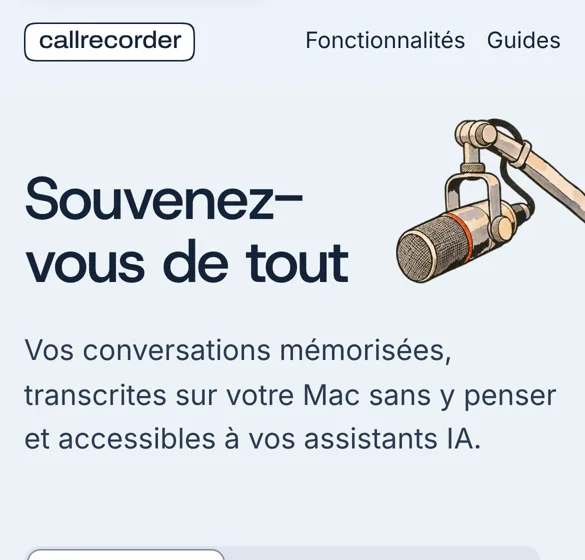
Prototype — Après : la page ne bouge plus, le micro est coupé au bord - Cause dans le code
- style.css:88 — sous 452 px, le micro est placé exprès « 100 % + 16 px − 0,7 × micro » : il sort de l'écran de 54 à 57 px, et le commentaire dit « c'est l'écran qui coupe ».
- style.css:17 —
overflow-x: clipest posé surhtml. Les navigateurs mobiles élargissent quand même la zone de mise en page à ce qui dépasse : l'écran ne coupe rien.
- Impact
- Tous les visiteurs sur téléphone, dès le premier écran de la première page. C'est souvent par là qu'arrive un lien partagé (LinkedIn, messages).
- Options
- Couper sur .wrap sous 760 pxPour : Une ligne de CSS, le dessin ne change pas (vérifié : même rendu, largeur 390 px).
Contre : Au-delà de 760 px, il ne faut pas couper : la conversation avec Claude déborde exprès de .wrap.Ramener le micro dans l'écranPour : Plus de débordement du tout.
Contre : Change la composition voulue (« l'écran coupe le bras »), choix de dessin de Gildas.overflow-x: hidden sur bodyPour : Courant.
Contre : Casse position: sticky de la barre du haut sur Safari ; même défaut que clip sur html chez certains navigateurs. - Choix
- Couper sur .wrap sous 760 px : le dessin reste exactement le même, seul le bord de l'écran devient vraiment le bord de la page.
- Règle
- WCAG 2.2, critère 1.4.10 Redistribution (Reflow) : pas de défilement horizontal à 320 px de large.
- Apple Human Interface Guidelines, « Layout » : le contenu tient dans la largeur de l'écran.
- Spécification
style.css:90 (après le bloc @media 452 px)—
@media (max-width: 760px) { .wrap { overflow-x: clip; } }- Critères d'acceptation
- R01 — Sur téléphone, l'accueil tient dans la largeur de l'écran : avant non tenu, prototype tenu (iPhone SE 320/320 ; iPhone 13 390/390 ; Pixel 7 412/412)
P02 · À 320 px, les cinq pages débordent de 24 px : la barre du haut et les onglets ne tiennent pas
- Symptôme
- À 320 px (iPhone SE en zoom d'affichage, ou un navigateur à 200 % de zoom sur un écran de 640 px), chaque page mesure 344 px : la barre « callrecorder · Fonctionnalités · Installer » finit à 344 px. Sur l'accueil, les onglets « Appels et visios · Réunions · Notes vocales » finissent à 360 px.
- Preuve
- donnees/mesures-complementaires-avant.json : les 5 pages à 344 px pour 320 ; mesure DOM : logo 16–130, Fonctionnalités 138–245, Installer 259–344 ; onglets 344 px de large.
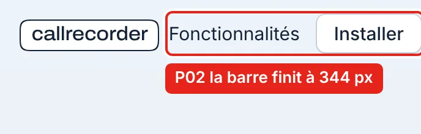
Avant — Guides à 320 px : la barre finit à 344 px, le bouton Installer sort de l'écran 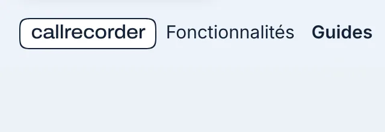
Prototype — Après : Guides remplace Installer sous 480 px, en 14 px sous 360 px : tout tient - Cause dans le code
- style.css:449 —
.nav .links: trois éléments sans retour à la ligne, 15 px, écart de 14 à 28 px ; aucune règle sous 480 px ne retire d'élément (style.css:448 réduit seulement les écarts). - style.css:121–122 —
.tabs button:white-space: nowrap, 12 px de marge intérieure sous 640 px, rien sous 360 px.
- style.css:449 —
- Impact
- Petits téléphones, zoom de texte agrandi, fenêtres étroites : précisément les personnes qui ont besoin de lire plus gros.
- Options
- Retirer Installer de la barre sous 480 px, réduire à 14 px sous 360 pxPour : Installer ne sert à rien sur un téléphone (P04) ; la place libérée accueille Guides (P06).
Contre : Un bouton de moins en vue sur téléphone : compensé par le grand bouton de l'accueil.Menu « hamburger » sous 480 pxPour : Convention des sites à beaucoup de liens.
Contre : Pour deux liens, un geste de plus et un contrôle à construire.Logo plus petitPour : Rien ne disparaît.
Contre : Le cartouche est un dessin fixe (26 px de haut) ; le gain (10 px) ne suffit pas. - Choix
- Retirer Installer sous 480 px et passer à 14 px sous 360 px ; les onglets en 13 px avec 8 px de marge sous 360 px. Vérifié : aucune page ne dépasse 320 px.
- Règle
- WCAG 2.2, critère 1.4.10 Redistribution (Reflow).
- apple.com sur iPhone : la barre locale reste collée en haut de l'écran (position sticky, top 0 après défilement) et s'ouvre en menu (relevé du 8 nov.)
- Spécification
style.css:448@media (max-width: 480px) { .nav { gap: 8px; } .nav .links { gap: 12px; } }@media (max-width: 480px) { … .nav .links .button { display: none; } } @media (max-width: 360px) { .nav .links { font-size: 14px; } .tabs button { font-size: 13px; padding: 8px 8px; } }- Critères d'acceptation
- R02 — À 320 px (WCAG 1.4.10), aucune page ne défile à l'horizontale : avant non tenu, prototype tenu (accueil 320 ; fonctionnalites/ 320 ; guides/ 320 ; versions/ 320 ; confidentialite/ 320)
P03 · La ligne d'installation est coupée avant « | zsh », et « Copier » n'apparaît qu'au survol
- Symptôme
- À 1440 px, la ligne s'arrête sur « install.sh… » ; à 375 px, sur « github.com/gildasfr… ». La fin « | zsh » n'est jamais visible. « Copier » n'apparaît qu'au survol ou au focus : au toucher, rien ne dit que la ligne se copie. Avec l'espacement de texte de WCAG 1.4.12, la ligne est encore plus coupée.
- Preuve
- donnees/references.json : brew.sh, bun.sh et rustup.rs montrent la commande entière et un bouton de copie visible sans survol, sur ordinateur et sur iPhone. donnees/mesures-complementaires-avant.json (« espacement_texte ») :
codecoupé sur l'accueil.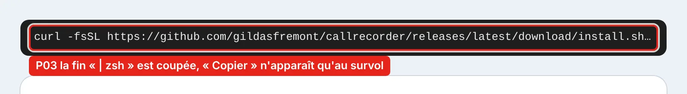
Avant — 1440 px : la ligne coupée, « Copier » absent 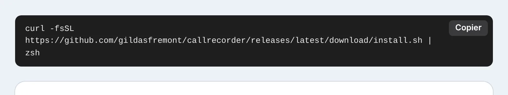
Prototype — Après : la ligne entière, « Copier » en permanence 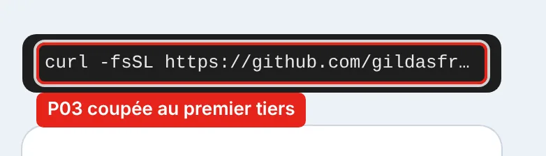
Avant — 375 px : un tiers de la commande 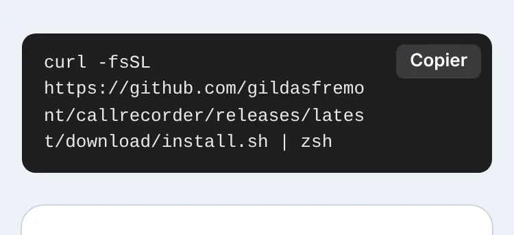
Prototype — Après, 375 px 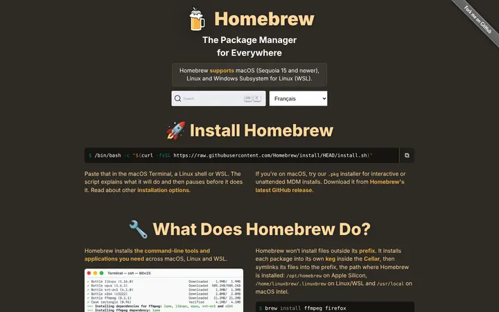
Référence — brew.sh : la commande entière, bouton de copie toujours visible 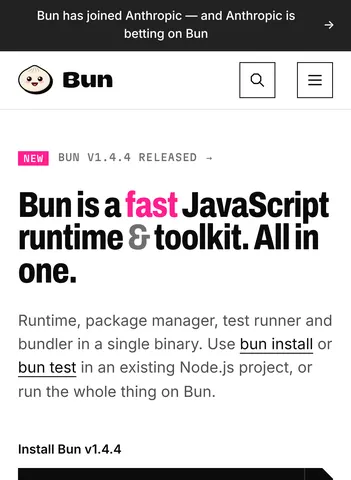
Référence — bun.sh sur iPhone : bouton de copie visible - Cause dans le code
- style.css:262 —
.cmdline code { white-space: nowrap; overflow: hidden; text-overflow: ellipsis }. - style.css:264–269 —
.cmdline .hint { opacity: 0 }, ne passe à 1 qu'au survol et au focus clavier.
- style.css:262 —
- Impact
- Chaque visiteur qui veut installer, sur la seule action de conversion du site. Les plus prudents lisent une commande avant de la coller dans le Terminal, surtout un
curl … | zsh. - Options
- Ligne entière qui passe à la ligne, « Copier » toujours visiblePour : Ce que font brew.sh, bun.sh et rustup.rs. La commande se lit, le geste se voit.
Contre : Le bloc prend deux lignes à 1440 px et quatre à 375 px.Bloc qui défile à l'horizontalePour : Garde l'aspect « une ligne de Terminal ».
Contre : Sur téléphone, la fin reste cachée ; un défilement dans un bouton se fait mal.Raccourcir l'URL (lien court)Pour : Tient sur une ligne.
Contre : Un lien court cache la destination : l'inverse de la transparence recherchée. - Choix
- La ligne entière et « Copier » toujours visible, en haut à droite du bloc. Le clic n'importe où copie toujours, la bulle « Copié » ne change pas.
- Règle
- brew.sh : la commande entière sur deux lignes, bouton « Copy to clipboard » de 44 × 44 px toujours visible (relevé du 8 nov., donnees/references.json)
- bun.sh : commande entière, bouton « Copy install command » toujours visible (relevé du 8 nov.)
- rustup.rs : commande entière dans un bloc qui défile, bouton de copie toujours visible (relevé du 8 nov.)
- WCAG 2.2, critère 1.4.12 Espacement du texte : aucun contenu perdu.
- Choix déjà tranché
- La ligne d'un seul tenant et le survol datent de 44b5136 (30 oct.) et dfc6ecb (31 oct.) ; le commentaire de style.css:260 dit « telle qu'elle apparaîtra dans le Terminal » — le Terminal, lui, la montre en entier.
- Spécification
style.css:262.cmdline code { … white-space: nowrap; overflow: hidden; text-overflow: ellipsis; }.cmdline code { … white-space: pre-wrap; overflow-wrap: anywhere; padding-right: 72px; }style.css:264–269.cmdline .hint { position: absolute; top: 0; right: 0; bottom: 0; … opacity: 0 } / :hover → opacity: 1.cmdline .hint { position: absolute; top: 8px; right: 8px; padding: 6px 10px; border-radius: 6px; background: #3a3a3c; … } / :hover → background: #4a4a4d- Critères d'acceptation
- R03-1440 — À 1440 px, la ligne d'installation se lit en entier et « Copier » se voit sans survol : avant non tenu, prototype tenu ({"coupe":false,"opacite":"1"})
- R03-375 — À 375 px, la ligne d'installation se lit en entier et « Copier » se voit sans survol : avant non tenu, prototype tenu ({"coupe":false,"opacite":"1"})
- R29 — Avec l'espacement de WCAG 1.4.12, ni la ligne d'installation ni les onglets ne sont coupés : avant non tenu, prototype tenu ()
P04 · Sur un téléphone, l'installation propose de copier une commande pour Mac
- Symptôme
- Depuis un iPhone ou un Android, « Installer » et « Installer Callrecorder » mènent à une ligne de Terminal et à trois étapes pour macOS. Le script de compatibilité reconnaît un Mac et un iPad, mais ne dit rien sur un téléphone.
- Preuve
- donnees/references.json : 2 sites d'app Mac sur 3 relevés adaptent le premier écran sur iPhone (Granola, Raycast) ; Rectangle ne le fait pas.
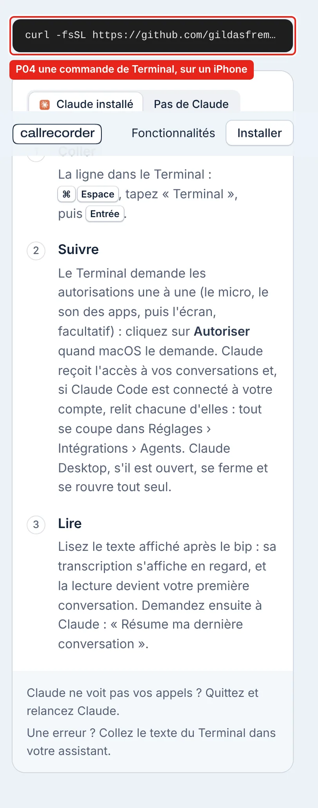
Avant — iPhone 13 : une commande de Terminal à copier 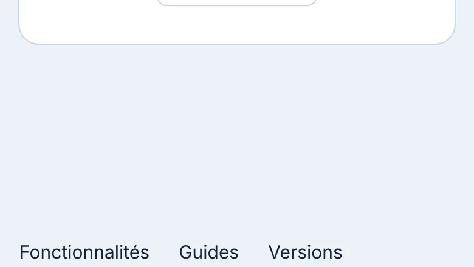
Prototype — Après : « Callrecorder s'installe sur un Mac » et « Envoyer le lien » 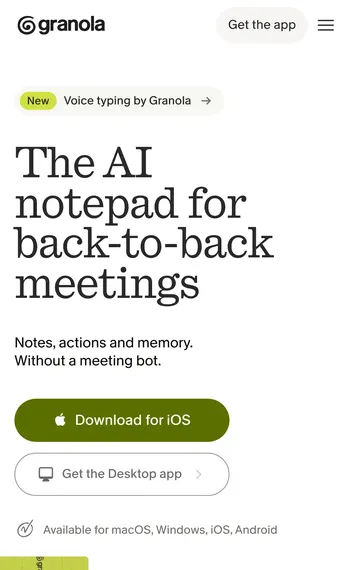
Référence — granola.ai sur iPhone : « Download for iOS », puis « Get the Desktop app » 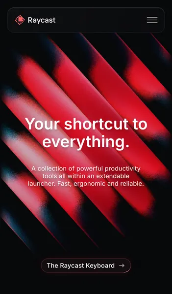
Référence — raycast.com sur iPhone : pas de bouton de téléchargement pour Mac - Cause dans le code
- index.html:191–213 — la partie Installation n'a qu'un état.
- index.html:262–303 — le script de compatibilité s'arrête (
if (!message) return) quand l'appareil n'est pas un Mac.
- Impact
- Les visiteurs qui arrivent par un lien partagé, sur leur téléphone. Le seul geste utile pour eux (retrouver la page sur le Mac) n'est proposé nulle part.
- Options
- Hors d'un Mac : une phrase et « Envoyer le lien » (feuille de partage du système)Pour : Le geste utile en un toucher (AirDrop, Messages, Mail) ; aucun service à construire.
Contre : Un état de plus à maintenir ; navigator.share n'existe pas partout (repli sur mailto:).Ne rien changer à la partie, masquer seulement les boutons InstallerPour : Rien à écrire.
Contre : Le visiteur ne sait toujours pas quoi faire.« M'envoyer un rappel » par e-mailPour : Rattrape plus tard.
Contre : Collecte une adresse, un service et un consentement : hors du principe du site. - Choix
- Une phrase et « Envoyer le lien », à la place de la ligne et des étapes, partout où le script ne reconnaît pas un Mac (téléphone, tablette, PC).
- Règle
- granola.ai sur iPhone : le bouton principal devient « Download for iOS », et « Get the Desktop app » passe en second (relevé du 8 nov.)
- raycast.com sur iPhone : aucun bouton de téléchargement pour Mac dans le premier écran (relevé du 8 nov.)
- rectangleapp.com sur iPhone : « DOWNLOAD » reste affiché, sans adaptation : le contre-exemple (relevé du 8 nov.)
- TEXTES.md, « Le bon geste selon l'appareil ».
- Spécification
index.html:191<div class="install">
<div class="install"> <div class="ailleurs" hidden><p>Callrecorder s'installe sur un Mac.</p><button class="button" type="button" data-partage>Envoyer le lien</button></div>
index.html:304 (nouveau script)—
si pas Mac : .install.hors-mac ; le bouton appelle navigator.share({ title, url }), sinon mailto:style.css:244.install { margin-top: 56px; }+ .install .ailleurs { … } .install.hors-mac .cmdline, .install.hors-mac .card { display: none; }- Critères d'acceptation
- R04 — Sur iPhone, l'installation propose « Envoyer le lien » au lieu de la ligne ; sur Mac, la ligne reste : avant non tenu, prototype tenu ({"ligne":false,"partage":true,"mac_ligne":true})
P05 · La page où l'on est se grise dans la barre : elle a l'air désactivée
- Symptôme
- Sur Fonctionnalités, le lien « Fonctionnalités » passe de #142338 à #566175. Dans le sommaire de la même page, l'élément courant fait l'inverse : plus foncé, plus gras, sur un fond.
- Preuve
- donnees/contraste-non-texte-avant.csv : le gris contre les autres liens, 2,53:1 ; la couleur est le seul signe de l'état.
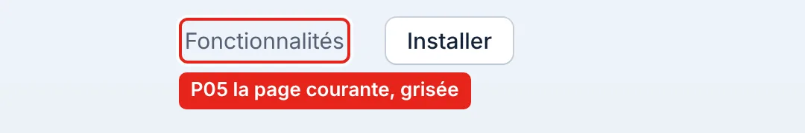
Avant — Fonctionnalités : la page courante grisée 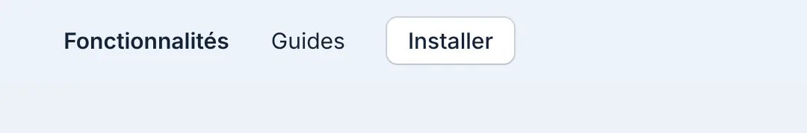
Prototype — Après : même couleur, graisse 600 Référence — apple.com : « Caractéristiques », la page courante, même couleur et un trait dessous - Cause dans le code
- style.css:451 —
.nav .links a[aria-current="page"] { color: var(--secondary); }.
- style.css:451 —
- Impact
- Chaque visite d'une page intérieure. Le gris se lit comme « indisponible » (barres de menus, Réglages, boutons désactivés).
- Options
- Graisse 600, même couleurPour : Comme Linear ; aucun nouveau dessin.
Contre : Le mot s'élargit d'environ 4 px.Trait dessous, comme ApplePour : Le signe le plus clair.
Contre : Se confond avec le soulignement des liens au survol (style.css:26).Garder le grisPour : Rien à faire.
Contre : Contre la convention ; la couleur seule porte l'état (WCAG 1.4.1). - Choix
- Graisse 600 et couleur du texte. Si Gildas préfère le trait d'Apple, retirer d'abord le soulignement au survol de la barre.
- Règle
- apple.com, barre locale de « MacBook Air » : la page courante (« Caractéristiques ») garde la couleur des autres liens (#000), cesse d'être un lien et prend un trait dessous (relevé du 8 nov.)
- linear.app/docs : l'élément courant de la barre passe en graisse 510 contre 400, même couleur (relevé du 8 nov.)
- WCAG 2.2, critère 1.4.1 Utilisation de la couleur.
- Spécification
style.css:451.nav .links a[aria-current="page"] { color: var(--secondary); }.nav .links a[aria-current="page"] { color: var(--text); font-weight: 600; }- Critères d'acceptation
- R05 — La page courante est au moins aussi foncée que les autres liens, et plus grasse : avant non tenu, prototype tenu ({"courant":"rgb(20, 35, 56)","graisse":"600","autre":"rgb(20, 35, 56)"})
P06 · Les Guides ne sont accessibles que par le pied de page
- Symptôme
- La barre propose Fonctionnalités et Installer. Les Guides, que cherche celui qui a déjà l'app (« Claude ne voit pas vos appels », « Mettre à jour »), sont au bout de chaque page, après 160 px de marge. Sur la page Guides elle-même, aucun lien du haut ne la nomme.
- Preuve
- donnees/references.json : Apple met « Assistance » dans sa barre globale ; Raycast, Obsidian et Granola gardent leur aide hors de la barre. La convention est partagée : la reco reste un détail.
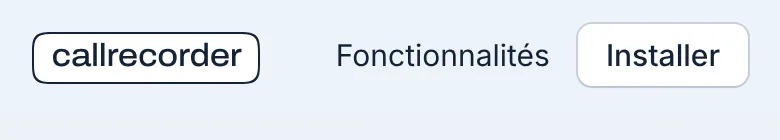
Avant — Guides, sur iPhone : la page n'est pas nommée dans la barre 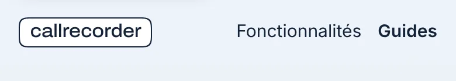
Prototype — Après : Fonctionnalités et Guides, la page courante en gras - Cause dans le code
- index.html:34–37 et les quatre autres pages, ligne 34–37 —
nav .linksn'a que deux liens.
- index.html:34–37 et les quatre autres pages, ligne 34–37 —
- Impact
- Les utilisateurs qui reviennent avec une question : le public qui revient le plus souvent sur le site.
- Options
- Ajouter Guides, partoutPour : Trois liens, comme beaucoup de sites d'app ; l'aide se trouve sans défiler.
Contre : Sur téléphone, la place manque (voir P02).Laisser en pied de pagePour : Barre minimale.
Contre : Il faut connaître la page pour la trouver. - Choix
- Ajouter Guides entre Fonctionnalités et Installer ; sous 480 px, il prend la place d'Installer (P02, P04).
- Règle
- apple.com : « Assistance » dans la barre globale (relevé du 8 nov.).
- Spécification
index.html:36 (et ../ sur les quatre autres pages)<a class="button" href="#installation">Installer</a>
<a href="guides/">Guides</a> <a class="button" href="#installation">Installer</a>
- Critères d'acceptation
- R06 — Les Guides sont dans la barre du haut, sur les cinq pages : avant non tenu, prototype tenu (true true true true true)
P07 · L'accueil pèse 2,4 Mo, dont 1,6 Mo d'images trop grandes : 5,4 s avant le plus grand élément sur mobile
- Symptôme
- Lighthouse mobile, accueil : performance 75, LCP 5,4 s, 2 465 Kio transférés. Les aquarelles sont servies à 1 000–1 200 px pour 430 px affichés au plus ; les captures de la fenêtre à 2 560 px pour 1 048 px ; 23 icônes de 256 px pour 19 à 56 px affichés (767 Ko) ; les deux téléphones des onglets cachés se chargent sans être vus. Aucune image n'a de srcset.
- Preuve
- donnees/lighthouse-avant.csv : accueil mobile 75 / LCP 5 359 ms / économie « uses-responsive-images » 1 657 Kio ; ordinateur 1 744 Kio. donnees/images-avant.csv : ordinateur.webp 295 Ko, cassettes.webp 249 Ko, reunion.webp 175 Ko.
- Cause dans le code
- index.html:173–178 — <img> des aquarelles sans srcset ni sizes.
- index.html:53 et :327 — capture de la fenêtre en 2 560 px ; le script des onglets change src seulement.
- Impact
- Chaque visite de l'accueil sur réseau mobile : la page se pose lentement, et le forfait du visiteur paie 1,6 Mo pour rien.
- Options
- srcset + sizes à la largeur réelle : aquarelles en 600/800 px et pleine taille en qualité 80, captures en 800/1 280 px sans perte, icônes en 128 pxPour : Le navigateur choisit ; aucune image visible ne change (critère R19, tableau Images de Mesures).
Contre : Un fichier par taille à produire à chaque nouvelle image (script fourni).Recompresser les originaux en qualité 80Pour : Rien à changer dans le HTML.
Contre : Gain limité (−40 %) ; une capture 2 560 px reste servie au téléphone.AVIFPour : Encore −20 à −30 %.
Contre : Outil à ajouter à la chaîne ; gain marginal après srcset. - Choix
- srcset et sizes, avec les variantes produites par outils/lotD.py et lotD2.py ; les icônes du Dock en 128 px au lieu de 256 (690 → 65 Ko) ; les deux téléphones des onglets cachés chargés seulement quand on les montre (226 Ko). Les originaux restent intacts. Le script des onglets change aussi le srcset, sinon le navigateur garde la première image.
- Règle
- Lighthouse, audit « uses-responsive-images » (Properly size images) et métrique LCP (bon : 2,5 s au plus, web.dev « Largest Contentful Paint »)
- DESIGN.md, « Images » : captures en WebP sans perte, illustrations en WebP — la règle est gardée, seules les tailles s'ajoutent.
- Spécification
index.html:173–178<img src="img/benefices/ordinateur.webp?v=2" width="1200" height="788" loading="lazy" …>
<img srcset="img/benefices/ordinateur-600.webp 600w, img/benefices/ordinateur-900.webp 900w, img/benefices/ordinateur.webp 1200w" sizes="(max-width: 640px) 80vw, 430px" src=… >
index.html:327img.src = srcs[tab];
img.srcset = sets[tab]; img.src = srcs[tab];
img/ (nouveaux fichiers)—
outils/lotD.py : 25 variantes, aucune plus lourde que son original
- Critères d'acceptation
- R19-mac — Accueil, ordinateur 1440 px, écran Retina : moins d'1 Mo d'images : avant non tenu, prototype tenu (801 Ko)
- R19-iphone — Accueil, iPhone 13 : moins d'1 Mo d'images : avant non tenu, prototype tenu (783 Ko)
P08 · 106 emplois d'images sans dimensions : le navigateur ne réserve pas leur place (Lighthouse « unsized-images » sur 3 pages)
- Symptôme
- Sur Versions, Guides et l'accueil, les images arrivent sans place réservée : le texte descend à mesure qu'elles se chargent, et ouvrir un guide fait sauter son contenu. Sur Versions, le plus gros du décalage mesuré (CLS 0,135) vient d'une autre cause, P35.
- Preuve
- donnees/images-avant.csv : 106 emplois d'images sans width/height sur 164. donnees/lighthouse-avant-local.csv : audit « unsized-images » en échec sur Guides et Versions. images/p16-mesure.json : position de la 7e version sans images puis avec.
- Cause dans le code
- versions/index.html:48–86 — 21 <img> sans width/height ; guides/index.html — 8 ; index.html — 28 (icônes du Dock et des conversations).
- Impact
- Tout lecteur du journal des versions ; au clic, un lien peut descendre sous le doigt.
- Options
- width et height lus dans les fichiers, sur chaque <img>Pour : Le navigateur réserve la place (aspect-ratio automatique) ; rien ne change à l'écran.
Contre : À refaire à chaque nouvelle image : le script de contrôle du site peut le vérifier.aspect-ratio dans le CSSPour : Un endroit.
Contre : Une valeur par image : revient au même, en plus fragile. - Choix
- width et height partout (57 ajouts, script outils/lotA.py), et un contrôle qui refuse une <img> sans dimensions.
- Règle
- Lighthouse, audit « unsized-images » ; web.dev « Optimize Cumulative Layout Shift » : toujours donner width et height aux images ; CLS bon à 0,1 au plus
- Spécification
versions/index.html:48…<img class="decoupe extrait" src="../img/versions/0.21.0.webp" loading="lazy" alt=…>
<img class="decoupe extrait" width="1360" height="330" src="../img/versions/0.21.0.webp" loading="lazy" alt=…>
- Critères d'acceptation
- R18 — Toutes les images déclarent width et height (Lighthouse « unsized-images ») : avant non tenu, prototype tenu (0 sans dimensions sur 86)
P09 · Fonctionnalités montre des Réglages d'il y a deux semaines, avec des libellés qui n'existent plus
- Symptôme
- La première image de Fonctionnalités est la page « Claude » des Réglages de la 0.8.0, avec « Accès de Claude et Codex à vos appels ». Le guide qu'elle annonce dit d'activer « Accès des agents à vos conversations », dans Intégrations › Agents. Le texte alternatif de #fichiers parle de « Base de données externe », l'image montre « Autres outils » (0.11.0).
- Preuve
- fonctionnalites/index.html : 3 images sur 12 viennent de img/versions/ (0.8.0, 0.11.0, 0.12.0), où elles datent une nouveauté du journal.
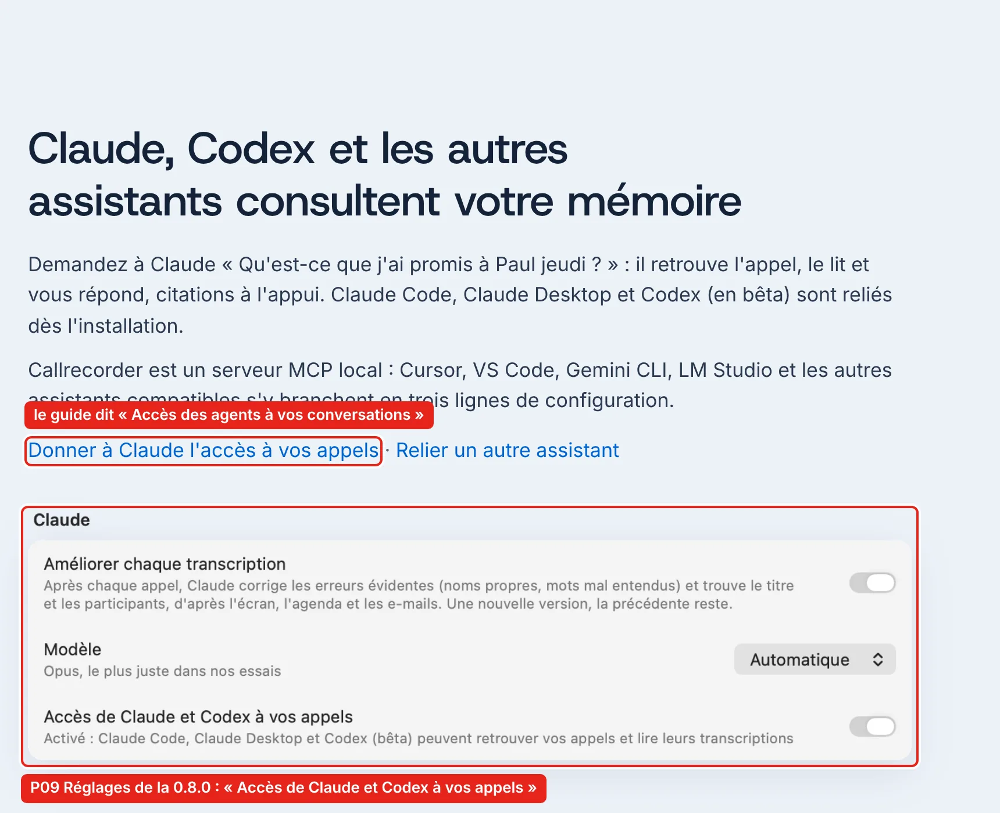
Avant — Le libellé de l'image et celui du guide, sur le même écran - Cause dans le code
- fonctionnalites/index.html:67, :139 et :149 — images du journal des versions réutilisées comme captures du présent.
- Impact
- Le visiteur retient un libellé et ne le retrouve pas dans l'app ; celui qui suit le guide cherche un réglage qui a changé de nom.
- Options
- Captures de la version publiée, refaites à chaque release (skill maquette-prod)Pour : Le site dit ce que l'app montre.
Contre : Captures à refaire : une tâche de release.Retirer les captures de Réglages de FonctionnalitésPour : Plus rien de périmé.
Contre : Perd la preuve visuelle des réglages. - Choix
- Captures de la 0.24.0 pour Fonctionnalités et Guides, faites avec la chaîne de captures de l'app, et une case « captures du site » dans la liste de release. Les images de img/versions/ restent au journal, où elles sont datées.
- Règle
- TEXTES.md, « Vocabulaire » : « Un mot, un sens, partout » ; « Conversation : le terme général (appels, réunions, notes) » ; « Appel : un vrai appel, et rien d'autre »
- TEXTES.md, principe 8 : « Un même objet porte le même nom dans l'app, sur le téléphone, sur le site ».
- Spécification
fonctionnalites/index.html:67src="../img/versions/0.8.0.webp"
src="../img/fonctionnalites/agents.webp" (capture 0.24.0 de Réglages › Intégrations › Agents)
- Critères d'acceptation
- Pas de critère automatique : vérification à l'œil, sur les captures de la release.
P10 · Sur téléphone, les extraits de Réglages s'affichent en caractères de 5 px
- Symptôme
- À 375 px, les extraits de 1 360 à 1 576 px sont réduits à 343 px : le texte de la capture fait environ 5 px. On devine des interrupteurs sans pouvoir les lire.
- Preuve
- donnees/images-avant.csv (largeur 375) : 0.8.0.webp 1 360 → 343 px ; claude.webp 1 370 → 343 ; pistes.webp 1 576 → 343 (28 px de haut) ; configuration.webp et configuration-telephones.webp 1 360 → 343 (rapport 0,25). Le texte d'origine, 13 pt en résolution double (26 px), devient 6,5 px.
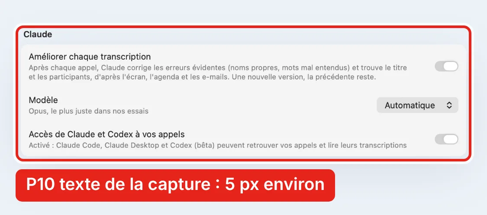
Avant — Fonctionnalités à 375 px : l'extrait des Réglages - Cause dans le code
- style.css:479–482 —
.feature figure.strip img: largeur 100 % à toutes les tailles d'écran.
- style.css:479–482 —
- Impact
- Tous les visiteurs de Fonctionnalités sur téléphone : 6 images sur la page.
- Options
- <picture> : sous 640 px, une découpe de la seule ligne utile, à sa taillePour : Lisible, net, plus léger.
Contre : Une découpe par extrait, à refaire avec les captures (P09).Masquer les .strip sous 640 pxPour : Une ligne de CSS.
Contre : Le texte doit alors suffire seul.Permettre de zoomer l'imagePour : Rien à produire.
Contre : Un geste de plus pour lire une image décorative. - Choix
- Découpes d'une ligne sous 640 px, produites avec les nouvelles captures de P09 ; en attendant, masquer les .strip sous 640 px.
- Règle
- DESIGN.md, « Captures » : « La netteté : un petit objet s'affiche à sa taille, en résolution double, jamais agrandi »
- WCAG 2.2, critère 1.4.5 Texte sous forme d'image (le texte des captures ne remplace pas le texte de la page).
- Spécification
fonctionnalites/index.html:67<figure class="strip"><img … src="../img/versions/0.8.0.webp">
<figure class="strip"><picture><source media="(max-width: 640px)" srcset="../img/fonctionnalites/agents-ligne.webp"><img …></picture>
- Critères d'acceptation
- Pas de critère automatique : vérification à l'œil, sur les captures de la release.
P11 · « Laisser un message » met le focus sur Dicter : la première espace tapée allume le micro
- Symptôme
- Après le clic, le focus est sur le bouton Dicter (« Espace pour dicter » s'affiche à côté). Celui qui tape « Bonjour Gildas » perd « Bonjour », puis l'espace lance la dictée et le navigateur demande l'accès au micro.
- Preuve
- Rendu au clavier, Chromium : document.activeElement = BUTTON.rec-toggle après le clic sur « Laisser un message » (donnees/criteres-avant.json, R07).
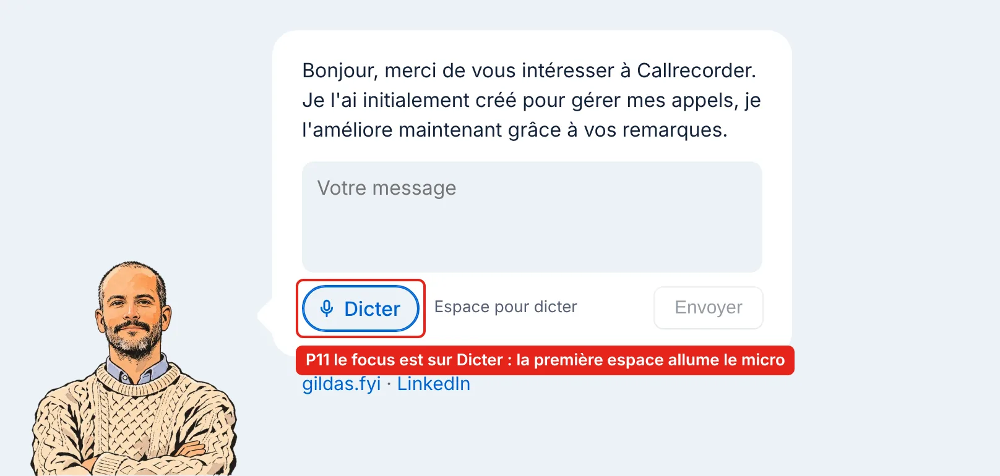
Avant — Le focus sur Dicter à l'ouverture 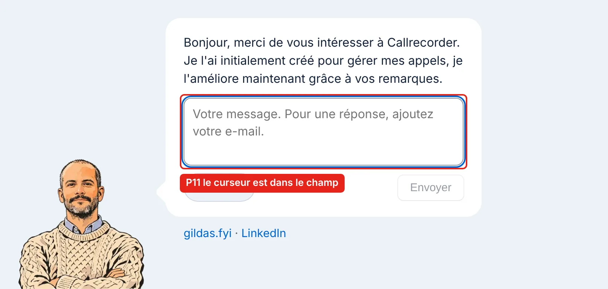
Prototype — Après : le curseur dans le champ - Cause dans le code
- note.js:167 —
(Recognition ? toggle : box).focus({ preventScroll: true }).
- note.js:167 —
- Impact
- Tous ceux qui écrivent un message dans Chrome, Edge ou Safari (les navigateurs qui ont la dictée).
- Options
- Focus dans le champ, Dicter reste à un Tab arrièrePour : La convention de toute zone de saisie ; aucune demande de micro par surprise.
Contre : La dictée demande un geste de plus.Garder le focus sur Dicter, mais Espace ne dicte qu'après un délaiPour : Garde l'idée.
Contre : Comportement inattendu d'un bouton, difficile à expliquer. - Choix
- Le focus dans le champ. La dictée garde son bouton et sa barre d'espace quand on y va.
- Règle
- Conventions de saisie : dans Mail (⌘N) et Messages (⌘N) sur macOS, le curseur arrive dans le premier champ ; dans Slack, ouvrir un fil met le curseur dans la zone de réponse
- WCAG 2.2, critère 3.2.1 Au focus : le focus ne déclenche pas de changement inattendu ; ici, c'est la première touche qui le fait.
- TEXTES.md, principe 7 : « Pas de mot qui fait peur » — une demande de micro surprise fait peur.
- Choix déjà tranché
- Fait exprès : 0b5554d (3 nov.), « Dictée à la barre d'espace ». La reco ne revient que sur l'ouverture ; la dictée à la barre d'espace reste.
- Spécification
note.js:167(Recognition ? toggle : box).focus({ preventScroll: true });box.focus({ preventScroll: true });- Critères d'acceptation
- R07 — À l'ouverture du message, le curseur est dans le champ : avant non tenu, prototype tenu (TEXTAREA)
P12 · Le champ du message n'a pas de limite visible : 1,13:1 contre la bulle
- Symptôme
- La zone de texte est un fond #edf2f8 dans une bulle blanche, sans bordure. On la distingue à peine.
- Preuve
- donnees/contraste-non-texte-avant.csv : champ contre bulle 1,13:1 (exigé : 3:1).
Avant — Le champ, ton sur ton Prototype — Après : fond blanc, bord à 3,4:1 - Cause dans le code
- style.css:373 —
.message textarea { border: 0; background: var(--window) }.
- style.css:373 —
- Impact
- Ceux qui ouvrent le message ; plus encore avec une vue basse ou un écran lumineux.
- Options
- Fond blanc, bord 1 px --edge (#7f8ca1)Pour : 3,4:1 ; l'aspect d'un champ de macOS.
Contre : Un trait de plus dans la bulle.Fond plus sombrePour : Pas de trait.
Contre : Un fond à 3:1 contre le blanc est un gris moyen, lourd sous le texte. - Choix
- Fond blanc et bord --edge. Les principes « pas de filets » visent les séparateurs, pas la limite d'un champ de saisie.
- Règle
- WCAG 2.2, critère 1.4.11 Contraste du contenu non textuel : la limite d'un champ à 3:1.
- Spécification
style.css:373border: 0; border-radius: 10px; background: var(--window);
border: 0; border-radius: 10px; background: #fff; box-shadow: inset 0 0 0 1px var(--edge);
- Critères d'acceptation
- R09 — La limite du champ atteint 3:1 (WCAG 1.4.11) : avant non tenu, prototype tenu (3.4)
P13 · Le message promet « Je vous lis très vite » sans dire comment être répondu
- Symptôme
- Le formulaire n'a qu'un champ ; seuls partent le texte, la date et une empreinte de l'adresse IP. Celui qui pose une question attend une réponse et ne sait pas qu'il doit laisser une adresse.
- Preuve
- note.js:191 : « Merci, c'est envoyé. Je vous lis très vite. » ; confidentialite/index.html:54 : aucune adresse n'est collectée.
Prototype — Après : le placeholder dit comment obtenir une réponse - Cause dans le code
- index.html:235 (et les quatre autres pages) —
placeholder="Votre message".
- index.html:235 (et les quatre autres pages) —
- Impact
- Chaque visiteur qui pose une question par ce formulaire.
- Options
- Le placeholder le ditPour : Aucun champ en plus.
Contre : Un placeholder disparaît à la saisie.Champ e-mail facultatifPour : Explicite.
Contre : Une donnée personnelle de plus à déclarer (page Confidentialité, RGPD #31). - Choix
- Le placeholder : « Votre message. Pour une réponse, ajoutez votre e-mail. »
- Règle
- TEXTES.md, principe 4 : « Le texte engage »
- WCAG 2.2, critère 3.3.2 Étiquettes ou instructions.
- Spécification
index.html:235 (et les quatre autres pages)placeholder="Votre message"
placeholder="Votre message. Pour une réponse, ajoutez votre e-mail."
- Critères d'acceptation
- R08 — Le champ dit comment obtenir une réponse : avant non tenu, prototype tenu (Votre message. Pour une réponse, ajoutez votre e-mail.)
P14 · Les onglets se déclarent comme tels mais ne suivent pas les flèches du clavier
- Symptôme
- Chaque onglet est un arrêt de Tab ; la flèche droite ne fait rien (essayé). Aucun role=tabpanel ni aria-controls : un lecteur d'écran annonce des onglets sans dire ce qu'ils changent.
- Preuve
- donnees/clavier-avant.csv : accueil, 18 arrêts dont 5 onglets (3 + 2).
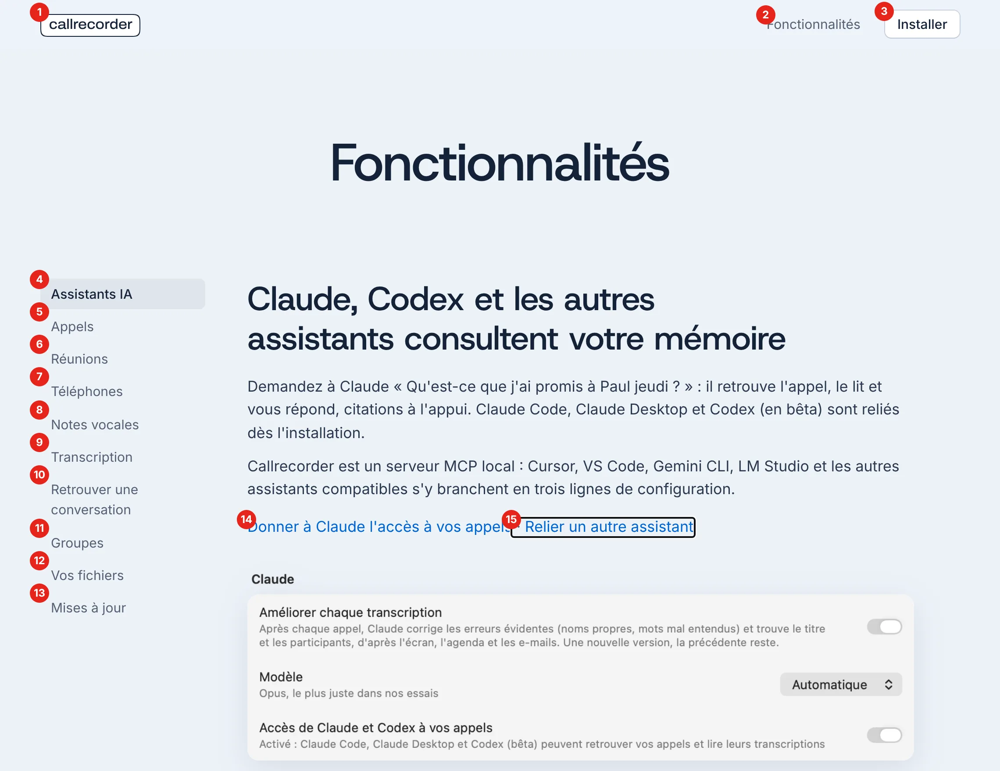
Avant — Fonctionnalités : les arrêts de Tab numérotés (voir aussi P21) - Cause dans le code
- index.html:46–50 et 194–197 — role=tablist / role=tab sans aria-controls ; index.html:306 et :320 — seul le clic est géré.
- Impact
- Les personnes au clavier et au lecteur d'écran.
- Options
- Motif APG complet : un arrêt de Tab, ← → Début Fin, aria-controls vers un tabpanelPour : Ce que l'annonce « onglet » promet ; une vingtaine de lignes partagées par les deux groupes.
Contre : Un script de plus.Retirer les rôles ARIA (simples boutons)Pour : Plus honnête que des onglets incomplets.
Contre : Perd l'annonce de l'état choisi. - Choix
- Le motif complet de l'APG, un seul script pour les deux groupes.
- Règle
- WAI-ARIA Authoring Practices, « Tabs Pattern », Keyboard Interaction : Tab entre dans la liste sur l'onglet actif ; ← → passent d'un onglet à l'autre ; Début et Fin vont au premier et au dernier
- WCAG 2.2, critère 4.1.2 Nom, rôle et valeur.
- WCAG 2.2, critère 2.1.1 Clavier.
- Spécification
index.html:47–49<button role="tab" aria-selected="true" data-tab="appel">
<button role="tab" aria-selected="true" aria-controls="scene" data-tab="appel">
index.html:52<div class="stage">
<div class="stage" id="scene" role="tabpanel" aria-label="Exemple">
index.html:198 et :205<ol class="steps" data-scenario="claude">
<div id="etapes-claude" role="tabpanel" data-scenario="claude"><ol class="steps"> … </ol></div> (le rôle sur la liste elle-même lui ferait perdre sa sémantique : axe « listitem »)
index.html (nouveau script)—
tabindex −1 sur les onglets non choisis ; keydown ← → Début Fin sur chaque tablist
- Critères d'acceptation
- R10 — Chaque groupe d'onglets a un seul arrêt de Tab, et → passe à l'onglet suivant : avant non tenu, prototype tenu (arrêts 1/1, après → : Réunions)
P15 · L'onglet choisi se distingue à 1,26:1, et à 1,13:1 dans l'installation
- Symptôme
- Le seul signe de l'onglet choisi est un fond blanc sur une piste #dfe5ef (accueil) ou #eff1f6 (carte d'installation), avec une ombre de 0,5 px à 12 %.
- Preuve
- donnees/contraste-non-texte-avant.csv : 1,26:1 et 1,13:1 (exigé : 3:1).
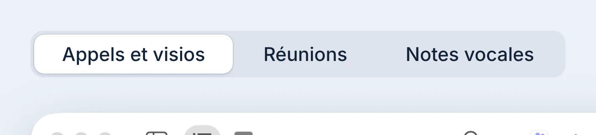
Avant — L'onglet choisi, avant (×3) 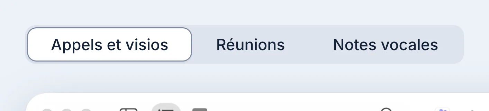
Prototype — Après : liseré de 1 px à 3,4:1 - Cause dans le code
- style.css:120 et :123 — piste rgba(30,60,120,.07), onglet choisi #fff + 0 0 0 .5px rgba(20,40,80,.12).
- Impact
- Tous les visiteurs, au premier écran ; plus encore sur un écran lumineux ou en plein jour.
- Options
- Liseré de 1 px --edge autour de l'onglet choisiPour : 3,4:1 ; garde le contrôle segmenté de macOS.
Contre : Un peu plus dessiné que celui de macOS.Onglet choisi plein (bleu nuit, texte blanc)Pour : Contraste maximal.
Contre : S'éloigne du contrôle de macOS, que le site imite exprès.GarderPour : Fidèle à macOS.
Contre : Non conforme : macOS lui-même est en dessous de 3:1. - Choix
- Le liseré --edge. Le contrôle reste celui de macOS, l'état se voit.
- Règle
- WCAG 2.2, critère 1.4.11 Contraste du contenu non textuel : l'indicateur d'état à 3:1.
- Spécification
style.css:123.tabs button[aria-selected="true"] { background: #fff; box-shadow: 0 0 0 .5px rgba(20,40,80,.12), 0 1px 3px rgba(20,40,80,.12); }.tabs button[aria-selected="true"] { background: #fff; box-shadow: 0 0 0 1px var(--edge), 0 1px 3px rgba(20,40,80,.12); }- Critères d'acceptation
- R11 — L'onglet choisi a un liseré d'au moins 1 px à 3:1 (WCAG 1.4.11) : avant non tenu, prototype tenu (3.4)
P16 · Le chevron qui ouvre un guide est à 2,65:1
- Symptôme
- Le chevron gris clair est le seul signe qu'une ligne se déplie.
- Preuve
- donnees/contraste-non-texte-avant.csv : 2,65:1 sur blanc (exigé : 3:1).
Avant — Chevron #93a0b4 (×3) 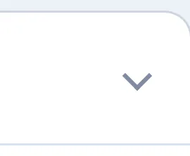
Prototype — Après : #7f8ca1, 3,4:1 - Cause dans le code
- style.css:401 —
border-right: 2px solid #93a0b4; border-bottom: 2px solid #93a0b4.
- style.css:401 —
- Impact
- Tous les lecteurs de Guides ; 24 lignes.
- Options
- #7f8ca1 (--edge)Pour : 3,4:1, même teinte.
Contre : Un peu plus marqué.GarderPour : —
Contre : Non conforme. - Choix
- --edge, la même valeur que le bord des champs et des onglets.
- Règle
- WCAG 2.2, critère 1.4.11 Contraste du contenu non textuel.
- Spécification
style.css:401border-right: 2px solid #93a0b4; border-bottom: 2px solid #93a0b4;
border-right: 2px solid var(--edge); border-bottom: 2px solid var(--edge);
- Critères d'acceptation
- R12 — Le chevron des guides atteint 3:1 sur blanc (WCAG 1.4.11) : avant non tenu, prototype tenu (3.4)
P17 · Les sources des citations, dans la conversation avec Claude, sont à 3,69:1
- Symptôme
- « · Banque Aurore, 28 oct. » : #8a8576 sur blanc. Sur téléphone, le texte fait 12,5 px.
- Preuve
- donnees/contraste-couples-avant.csv : seul couple sous 4,5:1 du site, 12 emplois (WCAG 3,69:1, APCA Lc 64,5).
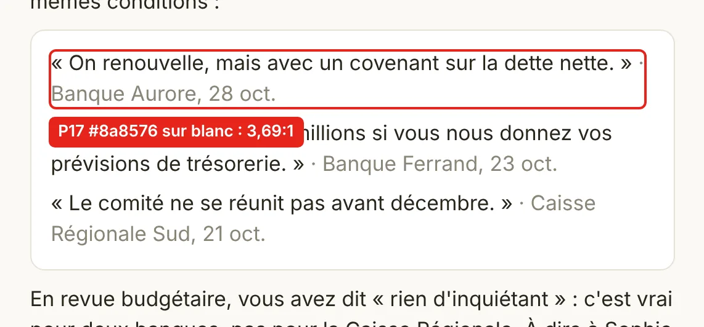
Avant — Les trois sources 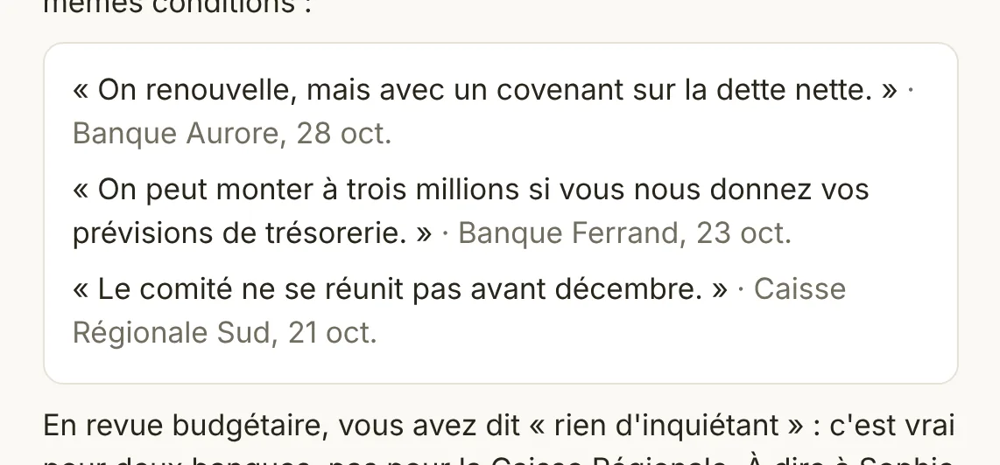
Prototype — Après : #736e60, 5,09:1 - Cause dans le code
- style.css:156 —
.claude .sub { color: #8a8576; }.
- style.css:156 —
- Impact
- Tous les visiteurs ; c'est l'exemple qui montre la promesse « chaque information garde sa source ».
- Options
- #736e60Pour : 5,09:1, garde la teinte chaude de l'app Claude imitée.
Contre : S'écarte un peu de la vraie couleur de Claude.GarderPour : Fidèle à Claude.
Contre : Seul échec WCAG 1.4.3 du site. - Choix
- #736e60.
- Règle
- WCAG 2.2, critère 1.4.3 Contraste (minimum) : 4,5:1.
- MANIFESTE.md, « Chaque information garde sa source ».
- Spécification
style.css:156.claude .sub { color: #8a8576; }.claude .sub { color: #736e60; }- Critères d'acceptation
- R13 — Les sources des citations atteignent 4,5:1 (WCAG 1.4.3) : avant non tenu, prototype tenu (5.09)
P18 · Le gris secondaire sur le fond de page reste sous le seuil APCA du texte courant (Lc 73 pour 75)
- Symptôme
- #566175 sur #edf2f8 passe WCAG (5,55:1) mais pas APCA pour un texte de 14–15 px : configuration requise, pied de page, légendes du Dock, liens de contact. L'orange d'alerte (#b25000) est à Lc 66,9.
- Preuve
- donnees/textes-avant.csv : 32 textes sous le seuil APCA, tous #566175 ou #b25000 sur #edf2f8 (et #6b6759 dans la conversation avec Claude, Lc 74,7).
- Cause dans le code
- style.css:6 —
--secondary: #566175; style.css:198 et :242 —color: #b25000; style.css:347 —#8a5a00.
- style.css:6 —
- Impact
- Tous les textes secondaires sur fond de page ; l'alerte « Ce Mac a un processeur Intel », le message qui compte le plus pour celui qui le reçoit.
- Options
- --secondary #515c70, --warn #8f4000Pour : Lc 75,1 et 76,4 ; écart à peine visible ; WCAG passe de 5,55 à 5,99:1.
Contre : Une valeur de la marque change (DESIGN.md à mettre à jour).GarderPour : WCAG est respecté.
Contre : APCA, plus juste pour les petits textes, ne l'est pas. - Choix
- --secondary #515c70 et un jeton --warn #8f4000 pour les deux alertes.
- Règle
- APCA Readability Criterion, mode simple « Bronze » : Lc 75 au moins pour un texte courant, Lc 60 pour les autres textes de contenu, Lc 45 pour les grands titres
- Spécification
style.css:6--secondary: #566175;
--secondary: #515c70;
style.css:198, :242, :347color: #b25000 / #8a5a00
color: var(--warn) /* #8f4000 */
- Critères d'acceptation
- Pas de critère automatique : vérification à l'œil, sur les captures de la release.
P19 · Sur téléphone, 71 cibles sur 118 font moins de 44 px, dont les liens du pied de page (23 px) et de contact (19 px)
- Symptôme
- Les liens « Choisir les apps et les sites · Arrêter un enregistrement » font 20 px de haut, séparés par un point ; Fonctionnalités, Guides, Versions en pied : 23 px ; gildas.fyi et LinkedIn : 19 px ; onglets : 30 px ; boutons : 31–33 px.
- Preuve
- donnees/cibles-avant.csv (375 px, état par défaut) : 118 cibles, 71 sous 44 px ; 2 échecs WCAG 2.5.8 (cibles de moins de 24 px sans l'espacement requis).
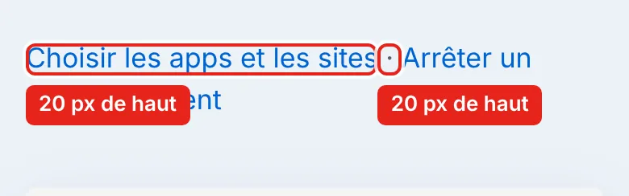
Avant — Fonctionnalités, iPhone : deux liens de 20 px collés 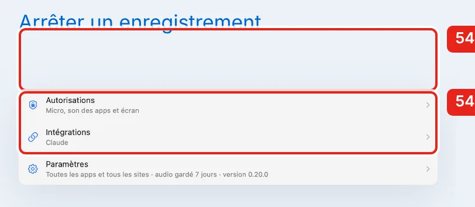
Prototype — Après : un lien par ligne, 44 px - Cause dans le code
- style.css:476–477 — .meta : liens en ligne séparés par « · » ; style.css:491 — pied de page ; style.css:335 — contact ; aucune règle (pointer: coarse).
- Impact
- Tous les visiteurs sur téléphone ; erreurs de toucher sur les liens collés.
- Options
- Au toucher seulement : zone de 44 px par marge intérieure compenséePour : La mise en page ne bouge pas ; Apple 44 pt tenu.
Contre : Les zones de toucher se chevauchent légèrement entre deux lignes.Agrandir partoutPour : Simple.
Contre : Change le dessin sur ordinateur, où la souris n'en a pas besoin. - Choix
- (pointer: coarse) : marge intérieure de 12,5 px compensée par une marge négative ; liens vers les guides un par ligne ; boutons et onglets à 44 px de haut. Sous 640 px, avec tout pointeur, les liens vers les guides vont un par ligne : le titre plus long de P27 coupait un lien sur deux lignes, collé au suivant, ce qu'axe a relevé dans un premier état du prototype (target-size, 2 nœuds).
- Règle
- Apple Human Interface Guidelines, « Accessibility », section Mobility : prévoir pour chaque contrôle une zone de toucher d'au moins 44 × 44 points
- WCAG 2.2, critère 2.5.8 Taille de la cible (minimum) : 24 × 24 px, ou l'espacement équivalent.
- Spécification
style.css:490 (avant « Pied de page court »)—
@media (max-width: 640px) { .feature .meta { line-height: 1.75; } .feature .meta a { display: block; } .feature .meta a + a::before { content: none; } } @media (pointer: coarse) { .nav .links a:not(.button), footer .links a, .author .contact a, .more a { display: inline-block; padding: 12.5px 0; margin: -12.5px 0; } .feature .meta a { display: block; padding: 12px 0; } .feature .meta a + a::before { content: none; } .button, .tabs button { min-height: 44px; … } }- Critères d'acceptation
- R21 — Au toucher, les liens courts ont 44 px de haut (Apple, 44 × 44 pt) : avant non tenu, prototype tenu (0 sous 44 px sur 34)
P20 · Le Dock bondit au survol mais ne mène nulle part ; ses noms sont introuvables au toucher
- Symptôme
- Au survol, l'icône bondit comme dans le Dock de macOS, où ce geste ouvre l'app ; ici, le clic ne fait rien. La bulle du nom apparaît 14 px au-dessus et disparaît si l'on va dessus. Au toucher et au clavier, aucun nom : à 375 px, les icônes font 22 px (Doctolib, Jitsi, Hermes, LM Studio ne se reconnaissent pas).
- Preuve
- donnees/cibles-avant.csv : les icônes ne sont pas des cibles (aucun lien) ; style.css:231–237 : bulle avec pointer-events: none.
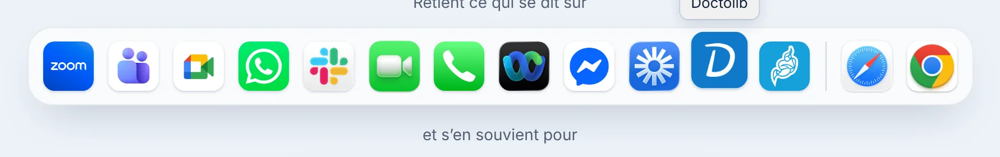
Avant — Survol : l'icône bondit, la bulle flotte à 14 px 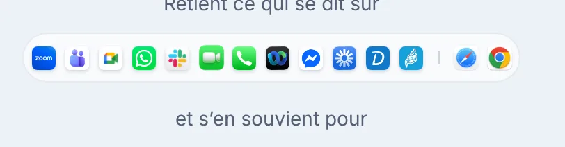
Avant — iPhone : 14 icônes de 22 px, sans nom 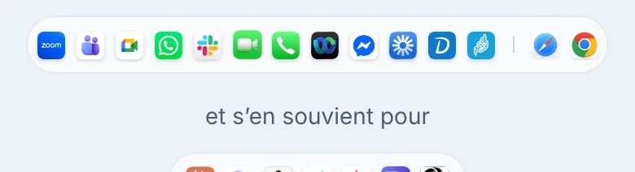
Prototype — Après : les noms écrits sous le Dock, sur les écrans sans survol 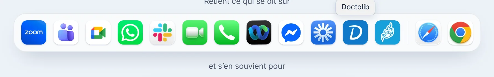
Prototype — Après : survol sans bond, la bulle collée à l’icône - Cause dans le code
- style.css:230 —
.dock .app:hover img { transform: translateY(-6px) scale(1.12) }; style.css:232 —bottom: calc(100% + 14px); style.css:235 —pointer-events: none.
- style.css:230 —
- Impact
- Tous les visiteurs : sur ordinateur, un geste qui promet une action ; sur téléphone, une rangée de logos sans nom.
- Options
- Pas de bond ; bulle collée et atteignable ; noms écrits sous le Dock (hover: none)Pour : Chaque public a les noms ; rien ne promet un clic.
Contre : Une ligne de texte en plus sur téléphone.Icônes focalisables avec bulle au focusPour : Les noms aussi au clavier.
Contre : Des arrêts de Tab sur des éléments qui ne font rien. - Choix
- Pas de bond, bulle atteignable, noms écrits sur les écrans sans survol (aria-hidden : les lecteurs d'écran lisent déjà les alt).
- Règle
- WCAG 2.2, critère 1.4.13 Contenu au survol ou au focus : le contenu qui apparaît au survol peut être survolé sans disparaître.
- Apple HIG, « Dock » (macOS) : le grossissement accompagne une icône qu'on peut ouvrir.
- Spécification
style.css:230.dock .app:hover img { transform: translateY(-6px) scale(1.12); }(supprimé)
style.css:232 et :235bottom: calc(100% + 14px); … pointer-events: none;
bottom: 100%; margin-bottom: 4px; …
index.html:152 et :162—
<p class="dock-noms" aria-hidden="true">Zoom, Microsoft Teams, …</p> (affiché sous @media (hover: none))
- Critères d'acceptation
- R20 — Le Dock ne bondit pas au survol, et ses noms s'écrivent sur les écrans sans survol : avant non tenu, prototype tenu (transform none, légendes visibles 2)
P21 · Aucune page n'a de <main> ni de lien d'évitement : 13 Tab avant le premier lien de Fonctionnalités
- Symptôme
- Au clavier sur Fonctionnalités, il faut passer le logo, la barre et les 10 liens du sommaire avant d'atteindre le contenu. Les lecteurs d'écran n'ont pas de repère « principal ». Sur l'accueil, la section Installation n'est jamais fermée : le pied de page en fait partie.
- Preuve
- axe-core : landmark-one-main sur les 5 pages ; « region » : 22 nœuds hors repère sur l'accueil. donnees/clavier-avant.csv : 13 arrêts avant le contenu sur Fonctionnalités.
Avant — Fonctionnalités à 1440 px : les arrêts de Tab dans l'ordre 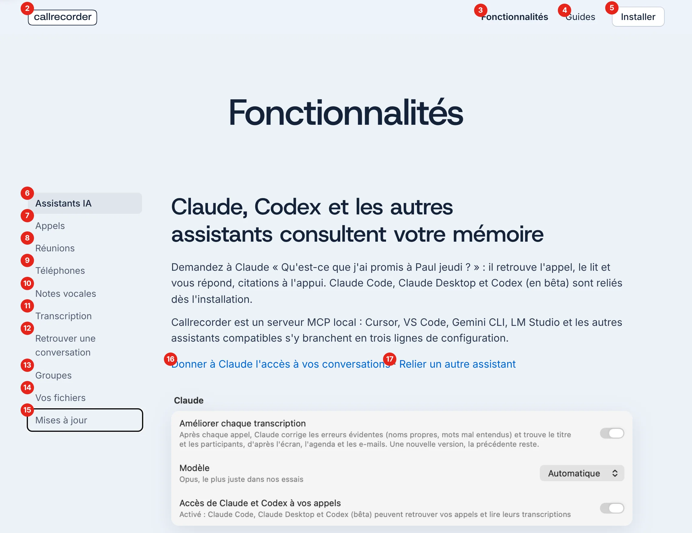
Prototype — Après : « Aller au contenu » en premier - Cause dans le code
- Les cinq pages : pas de <main> ; index.html:184 — <section id="installation"> sans </section> avant <footer> (ligne 216).
- Impact
- Les personnes au clavier et au lecteur d'écran, à chaque page.
- Options
- <main id="contenu"> + lien « Aller au contenu » visible au focusPour : La solution standard ; invisible pour les autres.
Contre : Un lien de plus en tête de chaque page.<main> seulPour : Les lecteurs d'écran sautent au repère.
Contre : Rien pour le clavier seul. - Choix
- Les deux, et la section Installation fermée.
- Règle
- WCAG 2.2, critère 2.4.1 Contourner des blocs.
- WCAG 2.2, critère 1.3.1 Information et relations.
- Spécification
Les cinq pages, après <body>—
<a class="evitement" href="#contenu">Aller au contenu</a>
Les cinq pages, après </nav>—
<main id="contenu"> … </main> (avant <footer>)
index.html:215—
</section>
- Critères d'acceptation
- R14 — Chaque page a un main, et le premier Tab propose « Aller au contenu » (WCAG 2.4.1) : avant non tenu, prototype tenu (["1:#contenu","1:#contenu","1:#contenu","1:#contenu","1:#contenu"])
P22 · Les six bénéfices de l'accueil ressemblent à des titres sans en être
- Symptôme
- « Une seule installation », « L'audio reste sur votre Mac »… ont la taille et la police d'un titre (24 px, Host Grotesk), mais ce sont des <span>. Pour un lecteur d'écran, l'accueil n'a que trois titres.
- Preuve
- donnees/structure-avant.csv : accueil, 3 titres (h1, h2, h2).
- Cause dans le code
- index.html:173–178 —
<div><span>…</span><p>; style.css:537 —.benefits span.
- index.html:173–178 —
- Impact
- Les personnes qui parcourent au lecteur d'écran, de titre en titre.
- Options
- <h3>, même stylePour : Rien ne change à l'écran.
Contre : — - Choix
- <h3>.
- Règle
- WCAG 2.2, critère 1.3.1 Information et relations.
- WCAG 2.2, critère 2.4.6 En-têtes et étiquettes.
- Spécification
index.html:173–178<div><span>Une seule installation</span><p>
<div><h3>Une seule installation</h3><p>
style.css:537 et :563.benefits span { display: block; font-family ….benefits h3 { display: block; margin: 0; font-family …- Critères d'acceptation
- R15 — Les bénéfices de l'accueil sont des titres h3 (WCAG 1.3.1) : avant non tenu, prototype tenu (5)
P23 · Versions : 35 versions sans titre, sans ancre ni date lisible par les machines
- Symptôme
- Le numéro est un <div>, la date un <small>, aucune ligne n'a d'id : on ne peut pas envoyer « ce qui change dans la 0.24.0 », et l'app ne peut pas ouvrir le journal à sa version. La page fait 13 600 px sur téléphone, sans repère.
- Preuve
- donnees/structure-avant.csv : versions, 1 seul titre (h1). donnees/references.json : Linear (titres h2 liés, 57 ancres) et Obsidian (108 ancres).
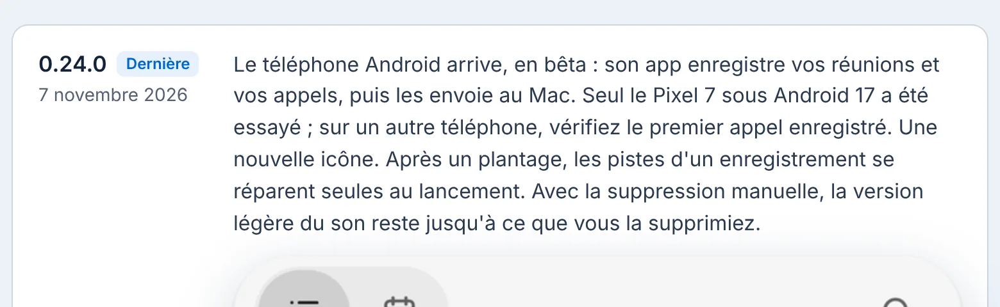
Avant — En-tête d'une version 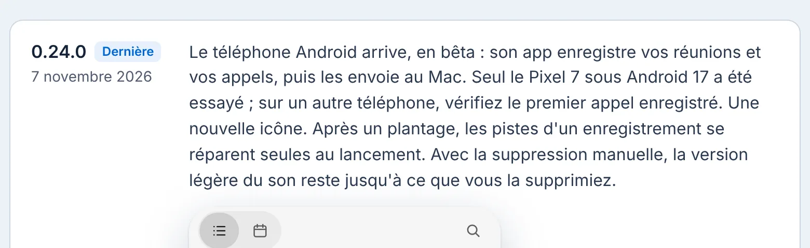
Prototype — Après : même dessin, titre h2 et lien d'ancre 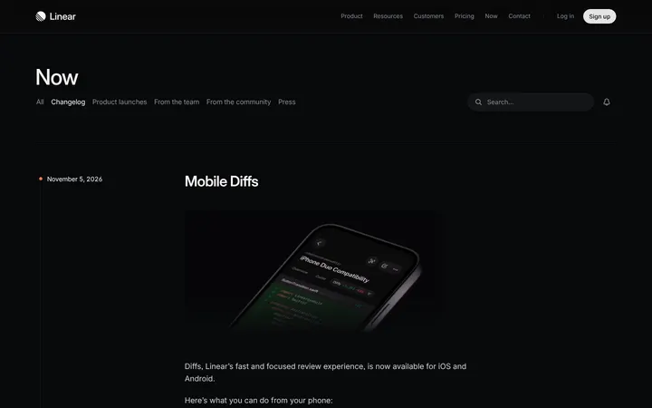
Référence — linear.app/changelog : chaque nouveauté est un titre lié - Cause dans le code
- versions/index.html:48–86 —
<div class="row version"><div class="num">0.24.0…<small>7 novembre 2026</small></div>.
- versions/index.html:48–86 —
- Impact
- Ceux qui lisent ou partagent une version ; les agents qui citent une version.
- Options
- <h2 id> avec lien et <time datetime>, même dessinPour : Ancre partageable, navigation par titres.
Contre : 35 lignes à réécrire (script fourni).Seulement des idPour : Ancre partageable.
Contre : Toujours pas de titres. - Choix
- h2, id, lien et <time>, style identique.
- Règle
- linear.app/changelog : chaque nouveauté est un titre h2 qui porte son lien (57 ancres sur la page) (relevé du 8 nov.)
- obsidian.md/changelog : titres h2 et h3 par version, 108 ancres (relevé du 8 nov.)
- HTML Living Standard, élément <time> et attribut datetime
- WCAG 2.2, critère 1.3.1 Information et relations.
- Spécification
versions/index.html:48<div class="row version"><div class="num">0.24.0<span class="latest">Dernière</span><small>7 novembre 2026</small></div>
<div class="row version" id="0.24.0"><h2 class="num"><a href="#0.24.0">0.24.0</a><span class="latest">Dernière</span><time datetime="2026-11-07">7 novembre 2026</time></h2>
- Critères d'acceptation
- R16 — Chaque version a un titre, une ancre et une date <time> : avant non tenu, prototype tenu ({"n":35,"ancres":35,"dates":35,"liens_bruts":0})
P24 · Une vignette du journal ouvre le fichier .webp seul, hors du site
- Symptôme
- Un clic sur une capture ouvre l'image brute : fond gris du navigateur, aucun lien de retour, et l'image n'y est pas plus grande. Au clavier, 24 arrêts de Tab de plus.
- Preuve
- donnees/clavier-avant.csv : versions, 34 arrêts dont 24 vignettes.
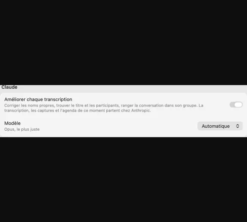
Avant — Ce qu'ouvre le clic sur une vignette - Cause dans le code
- versions/index.html:48–86 —
<a class="thumb" href="../img/versions/….webp">.
- versions/index.html:48–86 —
- Impact
- Les lecteurs du journal qui cliquent pour agrandir.
- Options
- Retirer le lienPour : Les vignettes sont à leur taille utile (240–420 px).
Contre : Plus d'agrandissement.Visionneuse <dialog>Pour : Agrandit dans la page, Échap ferme.
Contre : Un composant à écrire. - Choix
- Retirer le lien ; la visionneuse seulement si un agrandissement manque vraiment.
- Règle
- Convention des visionneuses (Photos, Coup d'œil) : un clic sur une image l'agrandit dans son contexte.
- Spécification
versions/index.html:48…<a class="thumb nue" href="../img/versions/0.24.0.webp"><img …></a>
<span class="thumb nue"><img …></span>
style.css:418–419, :584–585a.thumb
.thumb
- Critères d'acceptation
- R17 — Aucune vignette ne mène au fichier image brut : avant non tenu, prototype tenu (0)
P25 · Sur téléphone, Fonctionnalités perd son sommaire : 8 300 px sans repère
- Symptôme
- Au-dessus de 1000 px, un sommaire collant suit la lecture. En dessous, il disparaît : dix fonctionnalités à faire défiler, et celui qui cherche « Groupes » passe les neuf autres.
- Preuve
- donnees/structure-avant.csv : fonctionnalites, 8 317 px de haut à 375 px.
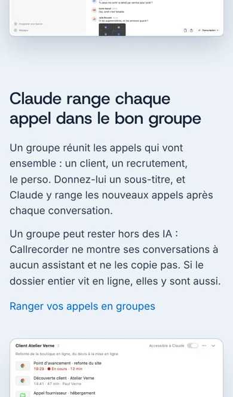
Avant — iPhone, au milieu de la page : aucun repère 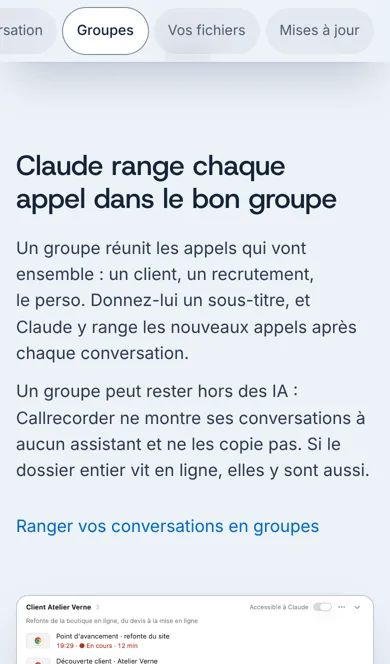
Prototype — Après : une rangée de pastilles collée en haut 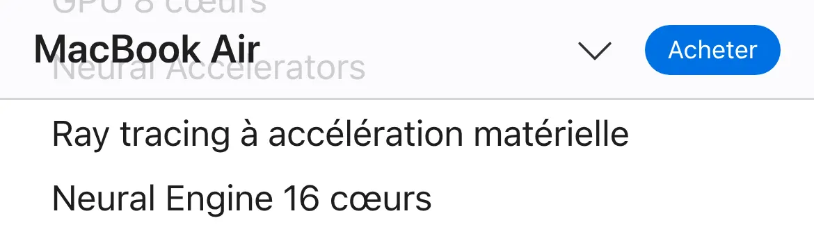
Référence — apple.com sur iPhone : la barre locale reste collée en haut - Cause dans le code
- style.css:497 —
.toc { display: none; }sous 1000 px.
- style.css:497 —
- Impact
- Tous les visiteurs de Fonctionnalités sur téléphone.
- Options
- Rangée de pastilles qui défile, collée en hautPour : Comme la barre locale d'Apple sur iPhone ; même liste, même suivi de lecture.
Contre : 48 px de hauteur prise en haut de l'écran.Menu déroulant « Aller à… »Pour : Compact.
Contre : Un geste de plus, et l'élément courant n'est plus visible. - Choix
- La rangée de pastilles ; la pastille courante reste visible en défilant.
- Règle
- apple.com sur iPhone : la barre locale reste collée en haut de l'écran (position sticky, top 0 après défilement) et s'ouvre en menu (relevé du 8 nov.)
- Spécification
style.css:497.toc { display: none; }@media (max-width: 999px) { .toc { position: sticky; top: 0; … overflow-x: auto; } .toc nav { display: flex; gap: 6px; } .toc a { … padding: 12px 14px; border-radius: 999px; } }fonctionnalites/index.html:202—
la pastille courante défile dans la vue : bar.scrollTo({ left: cur.offsetLeft − 16 })- Critères d'acceptation
- R22 — Sur téléphone, Fonctionnalités garde son sommaire, collé en haut : avant non tenu, prototype tenu ({"visible":true,"position":"sticky"})
P26 · Données et confidentialité : douze paragraphes sans un titre, sans date, l'obligation du lecteur en dernier
- Symptôme
- Un seul bloc de 12 paragraphes (2 450 px à 1440 px, 4 170 px sur téléphone). Celui qui cherche « mes appels partent-ils chez Anthropic ? » lit jusqu'au sixième. Le rappel d'informer ses interlocuteurs, une obligation du lecteur, arrive en dernier. Aucune date.
- Preuve
- donnees/structure-avant.csv : 1 seul titre. style.css:494 :
.legal h2est déjà écrit et ne sert pas. donnees/references.json : Apple, Raycast et Obsidian titrent et datent leur page.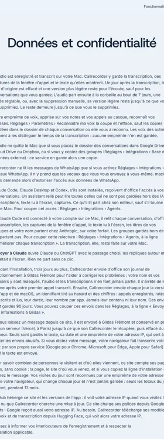
Avant — La page entière, avant 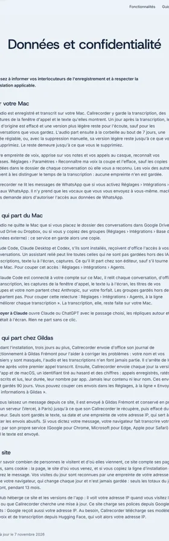
Prototype — Après : quatre titres, l'obligation en tête, la date en pied 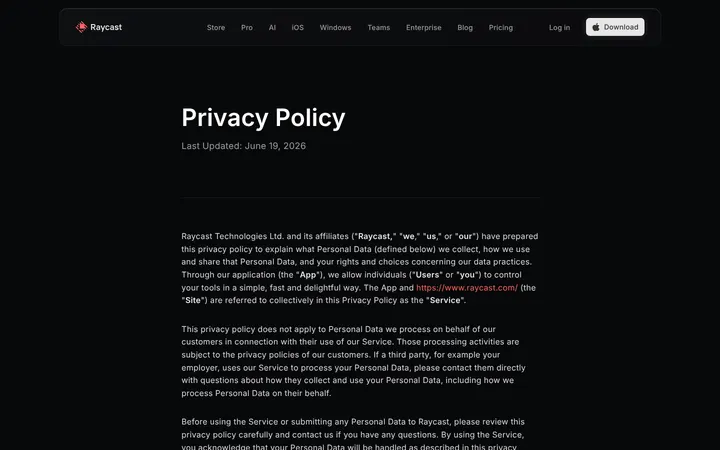
Référence — raycast.com/privacy : titres numérotés et date de mise à jour - Cause dans le code
- confidentialite/index.html:44–58 — 12 <p> à la suite.
- Impact
- Ceux qui hésitent à installer à cause de la confidentialité, et les interlocuteurs de Gildas qui vérifient ce que devient leur voix.
- Options
- Quatre titres sur les paragraphes existants, sans changer un mot ; obligation en tête ; date en piedPour : Sommaire immédiat, le texte validé reste.
Contre : Un paragraphe change de place (WhatsApp rejoint « Sur votre Mac »).Réécrire en questions-réponsesPour : Très lisible.
Contre : Réécriture de textes tranchés le 6 nov. (b555373). - Choix
- Quatre titres (« Sur votre Mac », « Ce qui part du Mac », « Ce qui part chez Gildas », « Ce site »), l'obligation en tête, « Mis à jour le 7 novembre 2026 » en pied.
- Règle
- RGPD, article 12.1 : l'information est fournie « d'une façon concise, transparente, compréhensible et aisément accessible »
- Politiques de confidentialité d'Apple (45 titres h2, « Mise à jour : 30 juillet 2025 »), de Raycast (13 h2 numérotés, « Last Updated ») et d'Obsidian (« Summary » puis 18 h3, « Last updated ») (relevé du 8 nov.)
- WCAG 2.2, critère 2.4.6 En-têtes et étiquettes ; 2.4.10 En-têtes de section (AAA).
- Choix déjà tranché
- Les paragraphes ont été réécrits le 6 nov. (b555373) : leur texte ne change pas.
- Spécification
confidentialite/index.html:46–57<p>…</p> × 12
<p class="avant-tout">Pensez à informer…</p> <h2>Sur votre Mac</h2> p1 p2 p4 <h2>Ce qui part du Mac</h2> p3 p5 p6 p7 <h2>Ce qui part chez Gildas</h2> p8 p9 <h2>Ce site</h2> p10 p11 <p class="mise-a-jour">Mis à jour le 7 novembre 2026</p>
- Critères d'acceptation
- R23 — Confidentialité : au moins 4 titres, une date de mise à jour, l'obligation d'informer en tête : avant non tenu, prototype tenu ({"h2":4,"date":true,"premier":"Pensez à informer vos interlocuteurs de "})
P27 · Les titres des guides disent « vos appels » là où l'app dit « conversations »
- Symptôme
- « Donner à Claude l'accès à vos appels », « Relier vos appels à un autre assistant », « Ranger vos appels en groupes », « Héberger vos appels en ligne ». Depuis la 0.19.0 (4 nov.), la fenêtre s'appelle Conversations, et le réglage « Accès des agents à vos conversations ». Le corps des guides dit déjà « fenêtre Conversations ».
- Preuve
- donnees/vocabulaire.csv : « appel(s) » 211 fois, « conversation(s) » 74 fois sur le site ; Guides : 59 contre 27.
- Cause dans le code
- guides/index.html:48, :56, :137, :141 ; fonctionnalites/index.html:65, :137, :147 (liens vers ces guides).
- Impact
- Celui qui enregistre des réunions et des notes se demande si « Ranger vos appels » le concerne.
- Options
- « conversations » dans ces quatre titres et leurs liens ; « appels » reste là où il s'agit d'appelsPour : Suit TEXTES.md ; ancres inchangées.
Contre : —Tout passer en « conversations »Pour : Uniforme.
Contre : Faux pour les vrais appels (iPhone, Zoom). - Choix
- Les quatre titres et leurs liens ; « Enregistrer les appels de votre iPhone » et « Claude ne voit pas vos appels » restent (des appels, et les mots du lecteur).
- Règle
- TEXTES.md, « Vocabulaire » : « Conversation : le terme général (appels, réunions, notes) » ; « Appel : un vrai appel, et rien d'autre »
- Choix déjà tranché
- Titres de 141d04b (26 oct.), d'avant le changement de mot : rien à défaire. « Vos appels rejoignent votre mémoire » (b555373, 6 nov.) parle d'appels exprès : il reste.
- Spécification
guides/index.html:48Donner à Claude l'accès à vos appels
Donner à Claude l'accès à vos conversations
guides/index.html:56Relier vos appels à un autre assistant
Relier vos conversations à un autre assistant
guides/index.html:137Ranger vos appels en groupes
Ranger vos conversations en groupes
guides/index.html:141Héberger vos appels en ligne
Héberger vos conversations en ligne
- Critères d'acceptation
- R24 — Les titres des guides disent « conversations » pour tout ce que l'app garde : avant non tenu, prototype tenu ()
P28 · La carte « Les appels de votre iPhone » redit la carte d'avant, sans dessin
- Symptôme
- La deuxième carte dit déjà « les appels de votre iPhone pris sur le Mac ». Deux cartes plus bas, une carte sans aquarelle le redit. Entre des cartes illustrées, une carte vide a l'air d'une image qui n'a pas chargé.
- Preuve
- index.html:174 et :176.
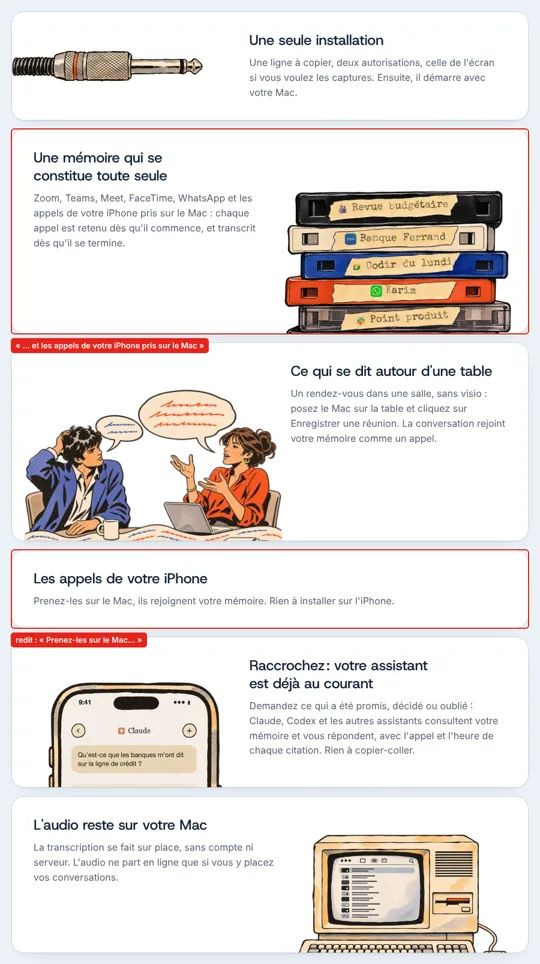
Avant — Les deux cartes 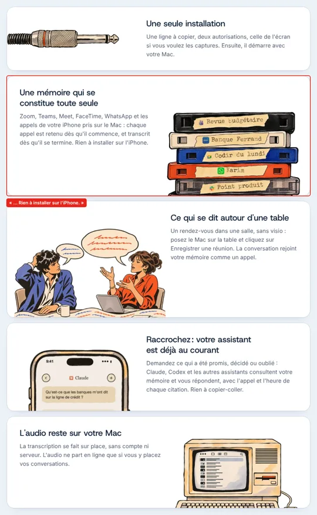
Prototype — Après : une seule carte le dit - Cause dans le code
- index.html:176 —
<li id="telephones" class="o-telephones">sans image.
- index.html:176 —
- Impact
- Tous les visiteurs de l'accueil.
- Options
- Retirer la carte, ajouter « Rien à installer sur l'iPhone. » à la deuxièmePour : Plus de redite ; l'ancre #telephones passe sur la deuxième.
Contre : Revient sur une carte ajoutée le 6 nov.Garder la carte, avec une aquarellePour : Le rythme texte-image revient.
Contre : La redite reste. - Choix
- Retirer la carte ; c'est à Gildas de confirmer, la carte étant récente.
- Règle
- TEXTES.md, principe 1 : « On ne dit pas deux fois la même chose dans une vue »
- Choix déjà tranché
- Carte ajoutée par b555373 (6 nov.), relecture des textes du site : la redite n'y est pas discutée. À confirmer par Gildas.
- Spécification
index.html:176<li id="telephones" class="o-telephones">…</li>
(supprimée)
index.html:174<li class="o-cassettes">… dès qu'il se termine.</p>
<li id="telephones" class="o-cassettes">… dès qu'il se termine. Rien à installer sur l'iPhone.</p>
- Critères d'acceptation
- R25 — L'iPhone est dit dans une seule carte de l'accueil : avant non tenu, prototype tenu (1)
P29 · La configuration requise se coupe avant son point médian
- Symptôme
- À 375 px : « macOS 15 ou plus récent » / « · Mac M1 ou plus récent ». Un séparateur en début de ligne se lit comme une puce.
- Preuve
- Mesure de position : le « · » est sur la 2e ligne (donnees/criteres-avant.json, R26).
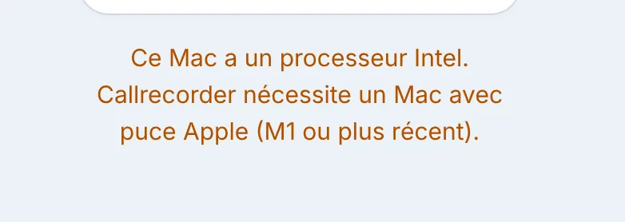
Avant — 375 px 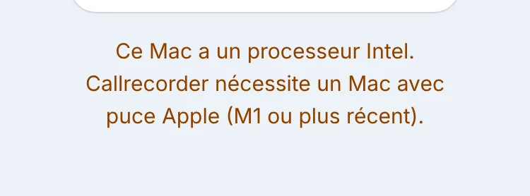
Prototype — Après - Cause dans le code
- index.html:132 — une espace normale avant « · » ; index.html:188 — espace insécable puis espace normale.
- Impact
- Tous les visiteurs sur téléphone.
- Options
- Espace insécable avant « · »Pour : Le point reste au bout de la ligne.
Contre : — - Choix
- « récent · Mac » aux deux endroits.
- Règle
- Typographie française (Lexique de l'Imprimerie nationale) : un séparateur ne commence pas une ligne.
- Spécification
index.html:132 et :188récent · Mac
récent · Mac
- Critères d'acceptation
- R26 — À 375 px, le point médian reste au bout de la première ligne : avant non tenu, prototype tenu ({"point":1320,"macos":1320,"m1":1343})
P30 · L'onglet et les favoris de l'accueil disent seulement « Callrecorder »
- Symptôme
- Les sous-pages suivent « Page · Callrecorder » ; l'accueil n'a que le nom. L'aperçu de partage, lui, dit « Callrecorder · Souvenez-vous de tout ».
- Preuve
- donnees/structure-avant.csv : titres des 5 pages.
- Cause dans le code
- index.html:7 —
<title>Callrecorder</title>.
- index.html:7 —
- Impact
- Onglets, historique, favoris, résultats de recherche.
- Options
- « Callrecorder · Souvenez-vous de tout »Pour : La forme du partage, déjà choisie.
Contre : — - Choix
- Reprendre og:title.
- Règle
- WCAG 2.2, critère 2.4.2 Titre de page.
- Choix déjà tranché
- Le titre court « Souvenez-vous de tout » (a56d428, 3 nov. ; rétabli par 1e46486) ne change pas.
- Spécification
index.html:7<title>Callrecorder</title>
<title>Callrecorder · Souvenez-vous de tout</title>
- Critères d'acceptation
- R27 — L'onglet de l'accueil dit ce qu'est le site : avant non tenu, prototype tenu (Callrecorder · Souvenez-vous de tout)
P31 · Dans les guides, les chemins de menu mêlent « > » et « › »
- Symptôme
- « Réglages > Téléphone > Appels sur d'autres appareils » et « clic droit > Supprimer » : partout ailleurs, le site écrit « › », et met le chemin en gras.
- Preuve
- donnees/vocabulaire.csv : « Réglages › » 39 fois ; « > » 3 fois.
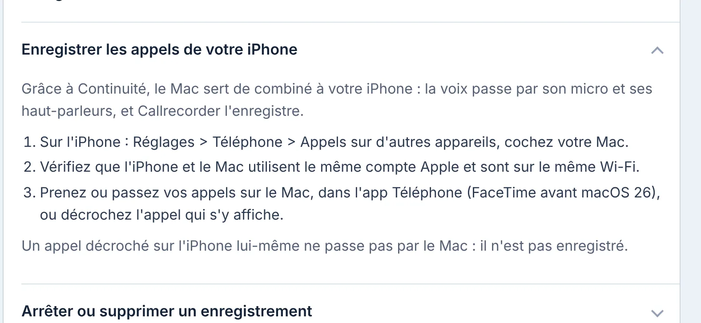
Avant — Guide iPhone 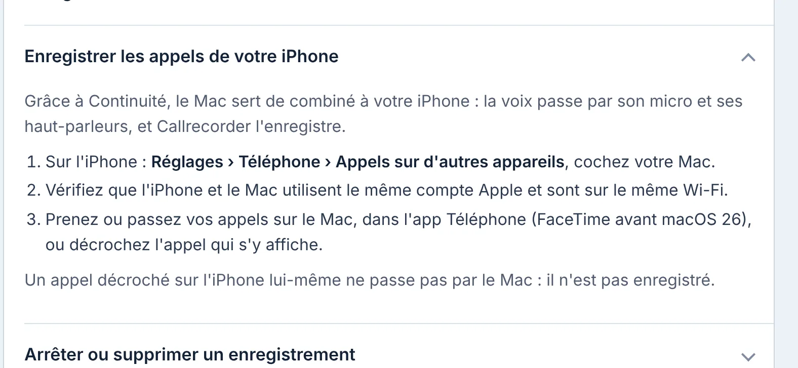
Prototype — Après - Cause dans le code
- guides/index.html:99 et :106.
- Impact
- Lecteurs des guides iPhone et Arrêter.
- Options
- « › » et gras partoutPour : La forme des 39 autres chemins du site.
Contre : — - Choix
- « › » et <b>.
- Règle
- La convention du site lui-même : « › » partout ailleurs (39 emplois, donnees/vocabulaire.csv), en gras dans les autres guides.
- TEXTES.md, principe 8 : un même objet, la même forme partout.
- Spécification
guides/index.html:99Réglages > Téléphone > Appels sur d'autres appareils
<b>Réglages › Téléphone › Appels sur d'autres appareils</b>
guides/index.html:106clic droit sur l'icône > / clic droit > / Édition >
› (×3)
- Critères d'acceptation
- R28 — Les chemins de menu s'écrivent avec › : avant non tenu, prototype tenu ()
P32 · style.css garde 50 sélecteurs sans page : 181 déclarations, 5,7 Ko de règles mortes
- Symptôme
- La pile d'icônes en éventail, la paire « outils × assistants », le bloc de téléchargement, le cartouche de partie, les boutons .default et .large… : aucune page ne les utilise, dans aucun état.
- Preuve
- donnees/css-mort.csv : 50 sélecteurs, 181 déclarations ; donnees/css-mort-preuve.json : retirés, 0 pixel de différence sur 10 rendus (5 pages × 2 largeurs). Le lot F seul retire 5 737 octets (41 482 → 35 745, −14 %).
- Cause dans le code
- style.css : la liste des 50 sélecteurs et de leurs lignes est dans donnees/css-mort.csv.
- Impact
- Ceux qui modifient le site : chaque règle morte se lit, se recopie, se croit utile.
- Options
- Les retirer, preuve au pixel à l'appuiPour : −14 % de CSS, rien ne bouge.
Contre : —Les garder pour plus tardPour : Rien à faire.
Contre : Le CSS mort ne sert jamais « plus tard » : la pile et le téléchargement ont été remplacés, pas mis de côté. - Choix
- Les retirer.
- Règle
- Lighthouse, audit « unused-css-rules ».
- DESIGN.md : « Une seule valeur par rôle ».
- Spécification
style.css (50 sélecteurs, voir outils/lotF.py)règles des composants sans page
(supprimées)
- Critères d'acceptation
- R30 — style.css ne garde plus les composants sans page (pile, paire, téléchargement…) : avant non tenu, prototype tenu ()
P33 · 53 couleurs, dont 14 transparences de la même encre, 21 tailles de texte, 27 rayons, 32 ombres
- Symptôme
- L'encre de la marque rgba(20,40,80,x) existe en 14 opacités (de 0,04 à 0,35) ; 16 et 17 px coexistent pour le texte courant ; 7, 8, 9, 10, 11 et 12 px pour les rayons des contrôles.
- Preuve
- donnees/css-resume.json, donnees/css-valeurs.csv ; donnees/migration.csv (531 lignes).
- Cause dans le code
- style.css : valeurs écrites en dur, 9 variables seulement (:root, lignes 2–14).
- Impact
- Ceux qui modifient le site ; à terme, des écarts visibles entre composants voisins.
- Options
- Jetons et table de migration, appliqués lot par lotPour : DESIGN.md « une seule valeur par rôle » enfin tenu.
Contre : Petits écarts visibles (1 à 2 px) à relire.Ne nommer que les couleurs (--edge, --warn)Pour : Sans risque visuel.
Contre : Le reste dérive encore. - Choix
- Les couleurs tout de suite (lot G, fait dans le prototype) ; la typographie, les espaces et les rayons ensuite, avec la table de migration et une relecture visuelle.
- Règle
- DESIGN.md : « Une seule valeur par rôle, jamais un chiffre recopié d'un fichier à l'autre ».
- Spécification
style.css:2–14:root { 9 variables }:root { + --edge, --warn, --t-*, --e-*, --r-*, --o-* } — voir systeme.html- Critères d'acceptation
- Pas de critère automatique : vérification à l'œil, sur les captures de la release.
P34 · Le site dit « assistants IA », TEXTES.md dit « Agents »
- Symptôme
- Le site emploie « assistant(s) » 29 fois et « agent(s) » 20 fois, parfois dans la même page (« vos assistants IA » ; « Intégrations › Agents »). TEXTES.md, « Vocabulaire » : « Agents : les assistants IA ».
- Preuve
- donnees/vocabulaire.csv.
- Cause dans le code
- index.html:43 (« vos assistants IA », f0f38b1, 1er nov.) et toutes les pages.
- Impact
- Le lecteur qui voit « assistants » sur le site puis « Agents » dans l'app.
- Options
- Garder « assistants » sur le site, « Agents » dans l'app, et l'écrire dans TEXTES.mdPour : « Assistant » parle à un public large.
Contre : Deux mots pour un objet.« Agents » partoutPour : Un mot, un sens.
Contre : Moins parlant pour un visiteur. - Choix
- Question pour Gildas : aucun changement dans le prototype.
- Règle
- TEXTES.md, principe 8 « Un mot, un sens, partout », et « Un mot nouveau s'ajoute à ce tableau avant d'entrer dans l'interface, avec la décision de Gildas ».
- Choix déjà tranché
- Le mot « assistants IA » vient de f0f38b1 (1er nov.) ; la ligne « Agents » de TEXTES.md est antérieure.
- Spécification
- Aucun changement de code.
- Critères d'acceptation
- Pas de critère automatique : vérification à l'œil, sur les captures de la release.
P35 · Dans le journal, la capture de la 0.24.0 s'affiche à 568 × 717 px au lieu de 300 : agrandie 1,9 fois, et la page se décale de 0,13
- Symptôme
- Les vignettes « nues » (téléphone de la 0.24.0, réglage de la 0.23.0) portent leur taille voulue dans leurs attributs (300 et 680 px, fichiers en résolution double), mais le CSS les étire à toute la colonne : 568 px. La capture du téléphone Android occupe 717 px de haut en tête du journal, floue sur un écran Retina. Comme sa largeur n'est connue qu'au chargement, toute la page descend : c'est le CLS de 0,13 que Lighthouse mesure sur Versions.
- Preuve
- Mesure DOM : 0.24.0.webp, fichier 600 px, attribut width 300, affiché 568 × 717 ; 0.23.0.webp, attribut 680, affiché 568. PerformanceObserver « layout-shift » : 0,132, porté par les lignes .row.version qui descendent (y 597 → hors de l'écran). donnees/lighthouse-avant-local.csv : versions ordinateur, CLS 0,135.
Avant — Versions à 1440 px : le téléphone de la 0.24.0 à 568 px de large Prototype — Après : 300 px, sa taille - Cause dans le code
- style.css:419 —
.version a.thumb img { width: 100% }s'applique aussi aux vignettes nues (style.css:584,width: auto; display: inline-block) : l'image prend la largeur de la colonne, pas celle de ses attributs.
- style.css:419 —
- Impact
- Chaque visiteur du journal : la première chose qu'il voit est une capture agrandie et floue, et la page saute pendant qu'il commence à lire.
- Options
- Ne plus étirer les vignettes nues : width: 100 % seulement sur :not(.nue), max-width: 100 % sur les nuesPour : Les attributs width/height, déjà écrits au bon format, décident ; plus de décalage (CLS mesuré : voir R32).
Contre : —width: auto sur l'image d'une vignette nuePour : Une règle.
Contre : Essayé et écarté : une déclaration CSS l'emporte sur l'attribut width, l'image reprend sa taille naturelle (600 px, ramenée à 568).Fixer la largeur en CSS, vignette par vignettePour : Précis.
Contre : Une valeur à recopier pour chaque nouvelle version. - Choix
- width: 100 % réservé aux vignettes ordinaires ; les vignettes nues prennent la largeur de leurs attributs, plafonnée à la colonne.
- Règle
- DESIGN.md, « Captures », la netteté : « un petit objet s'affiche à sa taille, en résolution double, jamais agrandi »
- Lighthouse, audit « unsized-images » ; web.dev « Optimize Cumulative Layout Shift » : toujours donner width et height aux images ; CLS bon à 0,1 au plus
- Spécification
style.css:419.version a.thumb img { width: 100%; height: auto; display: block; … }.version a.thumb:not(.nue) img { width: 100%; } .version a.thumb.nue img { max-width: 100%; } .version a.thumb img { height: auto; display: block; … }- Critères d'acceptation
- R31 — Les vignettes du journal ne s'affichent jamais plus grandes que leurs attributs (DESIGN.md, « La netteté ») : avant non tenu, prototype tenu (0.24.0.webp 300/300 ; 0.23.0.webp 568/680 ; 0.22.0.webp 144/144)
- R32 — Versions ne se décale pas au chargement (CLS sous 0,1, web.dev) : avant non tenu, prototype tenu (0)